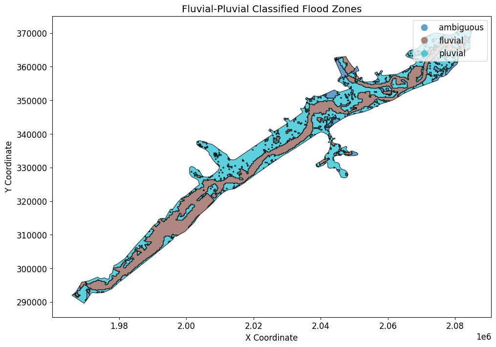

Fluvial-Pluvial Delineation¶
Validation and Verification¶
Delineation Quality Checks:
- Hydraulic Connectivity
- Verify fluvial flooding is connected to river/stream
- Check pluvial areas are isolated from channel
-
Validate flow path analysis
-
Threshold Sensitivity
- Test multiple distance thresholds
- Document threshold selection rationale
-
Check for reasonable transitions between classes
-
Physical Plausibility
- Low areas far from channels should be pluvial
- Areas adjacent to channels should be fluvial
-
Check for unrealistic classifications
-
Comparison with Field Observations
- Known flooding sources (if available)
- Historical flood extents
- Local knowledge validation
Output Verification:
# Check classification statistics
fluvial_area = (classified_raster == 1).sum() * pixel_area
pluvial_area = (classified_raster == 2).sum() * pixel_area
print(f"Fluvial: {fluvial_area / 1e6:.2f} km²")
print(f"Pluvial: {pluvial_area / 1e6:.2f} km²")
print(f"Ratio: {fluvial_area / pluvial_area:.2f}")
Professional Review Requirements¶
- [ ] Methodology peer reviewed
- [ ] Threshold selection documented and justified
- [ ] Results compared with historical flooding patterns
- [ ] Uncertainty quantified and communicated
- [ ] Limitations clearly stated in deliverables
- [ ] Licensed professional certification (if regulatory use)
Fluvial vs Pluvial Flooding¶
Definitions: - Fluvial: River/stream overflow flooding (channel-driven) - Pluvial: Surface water flooding from direct rainfall (not channel-driven)
Why Delineation Matters: - Different mitigation strategies - Different regulatory frameworks - Different risk assessment methods - Compound flooding may occur (both types simultaneously)
This Notebook Demonstrates: - Spatial delineation using HEC-RAS 2D results - Attribution based on flow paths and connectivity - Visualization of flood source areas
Reference¶
- FEMA Flood Insurance Study Guidelines
- Urban Drainage and Flood Control District Guidelines
- HEC-RAS 2D Modeling User's Manual (compound flooding chapter)
Professional Context¶
Fluvial/pluvial delineation is critical for: - Flood risk communication to stakeholders - Insurance rating and premiums - Infrastructure design (different protection levels) - Regulatory compliance (separate standards may apply)
Important: This is a demonstration workflow. Professional delineation requires: - Review by licensed professional engineer - Validation against field observations - Consideration of site-specific hydraulics - Peer review of methodology
# =============================================================================
# DEVELOPMENT MODE TOGGLE
# =============================================================================
USE_LOCAL_SOURCE = False # <-- TOGGLE THIS
if USE_LOCAL_SOURCE:
import sys
from pathlib import Path
local_path = str(Path.cwd().parent)
if local_path not in sys.path:
sys.path.insert(0, local_path)
print(f"📁 LOCAL SOURCE MODE: Loading from {local_path}/ras_commander")
else:
print("📦 PIP PACKAGE MODE: Loading installed ras-commander")
# Import ras-commander
from ras_commander import HdfBase, HdfFluvialPluvial, HdfMesh, HdfResultsMesh, HdfResultsPlot, HdfUtils, RasCmdr, RasExamples, RasPlan, init_ras_project, ras
# Verify which version loaded
import ras_commander
print(f"✓ Loaded: {ras_commander.__file__}")
📦 PIP PACKAGE MODE: Loading installed ras-commander
✓ Loaded: c:\Users\billk_clb\anaconda3\envs\rascmdr_piptest\Lib\site-packages\ras_commander\__init__.py
Parameters¶
Configure these values to customize the notebook for your project.
# =============================================================================
# PARAMETERS - Edit these to customize the notebook
# =============================================================================
from pathlib import Path
# Project Configuration
PROJECT_NAME = "BaldEagleCrkMulti2D" # Example project to extract
RAS_VERSION = "6.6" # HEC-RAS version (6.3, 6.5, 6.6, etc.)
# HDF Analysis Settings
PLAN = "06" # Plan number (for HDF file path)
TIME_INDEX = -1 # Time step index (-1 = last)
PROFILE = "Max" # Profile name for steady analysis
Delineate Fluvial and Pluvial Areas using RAS-Commander¶
We will leverage the HEC RAS Summary Outputs to delineate the Fluvial and Pluvial Areas
Maximum Water Surface Elevation (WSEL) for each cell is recorded, along with the timestamps of when the maximum WSEL occurs.
By locating adjacent cells with dissimilar timestamps, we can delineate the Fluvial and Pluvial Areas.
A note about datframe types:
Information from the HEC-RAS plan files are generally dataframes. The text file interface is for the 32-bit side of HEC-RAS and all spatial data is most easily accessed in the HDF files. This includes plan_df, geom_df, hdf_paths_df
Geometry elements (Mesh Faces and Nodes) are provided as Geodataframes (cell_polygons_gdf, boundary_gdf)
Package Installation and Environment Setup¶
Uncomment and run package installation commands if needed
# Install ras-commander from pip (uncomment to install if needed)
#!pip install ras-commander
# This installs ras-commander and all dependencies
# Import all required modules
#from ras_commander import HdfBase, HdfMesh, HdfResultsMesh, HdfResultsPlot, HdfUtils, RasCmdr, RasExamples, RasPlan, init_ras_project, ras # Import all ras-commander modules
# Import the required libraries for this notebook
import h5py
import numpy as np
import requests
import pandas as pd
import geopandas as gpd
import matplotlib.pyplot as plt
import pyproj
from shapely.geometry import Point, LineString, Polygon
import xarray as xr
from pathlib import Path
# Download the BaldEagleCrkMulti2D project from HEC and run plan 06
# Define the path to the BaldEagleCrkMulti2D project
import logging
# Extract project using suffix parameter (returns correct path)
bald_eagle_path = RasExamples.extract_project(PROJECT_NAME, suffix="14")
# Initialize the RAS project using the default global ras object
init_ras_project(bald_eagle_path, RAS_VERSION)
logging.info(f"Bald Eagle project initialized with folder: {ras.project_folder}")
# Use the plan number from parameters
plan_number = PLAN
# Update the run flags in the plan file
RasPlan.update_run_flags(
plan_number,
geometry_preprocessor=True, # Run HTab
unsteady_flow_simulation=True, # Run UNet
post_processor=True, # Run PostProcess
floodplain_mapping=False, # Run RASMapper
)
# Execute Plan 06 using RasCmdr with skip_existing=True
# This will skip execution if HDF results already exist with "Complete Process"
print(f"Executing Plan {plan_number} for the Bald Eagle Creek project...")
success_bald_eagle = RasCmdr.compute_plan(plan_number, skip_existing=True)
if success_bald_eagle:
print(f"Plan {plan_number} executed successfully (or skipped - results exist).")
else:
print(f"Plan {plan_number} execution failed for Bald Eagle.")
2025-12-30 15:11:39 - ras_commander.RasExamples - INFO - Found zip file: C:\Users\billk_clb\anaconda3\envs\rascmdr_piptest\Lib\site-packages\examples\Example_Projects_6_6.zip
2025-12-30 15:11:39 - ras_commander.RasExamples - INFO - Loading project data from CSV...
2025-12-30 15:11:39 - ras_commander.RasExamples - INFO - Loaded 68 projects from CSV.
2025-12-30 15:11:39 - ras_commander.RasExamples - INFO - ----- RasExamples Extracting Project -----
2025-12-30 15:11:39 - ras_commander.RasExamples - INFO - Extracting project 'BaldEagleCrkMulti2D' as 'BaldEagleCrkMulti2D_14'
2025-12-30 15:11:39 - ras_commander.RasExamples - INFO - Folder 'BaldEagleCrkMulti2D_14' already exists. Deleting existing folder...
2025-12-30 15:11:39 - ras_commander.RasExamples - INFO - Existing folder 'BaldEagleCrkMulti2D_14' has been deleted.
2025-12-30 15:11:41 - ras_commander.RasExamples - INFO - Successfully extracted project 'BaldEagleCrkMulti2D' to C:\Users\billk_clb\anaconda3\envs\rascmdr_piptest\Lib\site-packages\examples\example_projects\BaldEagleCrkMulti2D_14
2025-12-30 15:11:41 - ras_commander.rasmap - INFO - Successfully parsed RASMapper file: C:\Users\billk_clb\anaconda3\envs\rascmdr_piptest\Lib\site-packages\examples\example_projects\BaldEagleCrkMulti2D_14\BaldEagleDamBrk.rasmap
2025-12-30 15:11:41 - root - INFO - Bald Eagle project initialized with folder: C:\Users\billk_clb\anaconda3\envs\rascmdr_piptest\Lib\site-packages\examples\example_projects\BaldEagleCrkMulti2D_14
2025-12-30 15:11:41 - ras_commander.RasPlan - INFO - Successfully updated run flags in plan file: C:\Users\billk_clb\anaconda3\envs\rascmdr_piptest\Lib\site-packages\examples\example_projects\BaldEagleCrkMulti2D_14\BaldEagleDamBrk.p06 (flags modified: 4)
2025-12-30 15:11:41 - ras_commander.RasCmdr - INFO - Using ras_object with project folder: C:\Users\billk_clb\anaconda3\envs\rascmdr_piptest\Lib\site-packages\examples\example_projects\BaldEagleCrkMulti2D_14
2025-12-30 15:11:41 - ras_commander.RasCmdr - INFO - Running HEC-RAS from the Command Line:
2025-12-30 15:11:41 - ras_commander.RasCmdr - INFO - Running command: "C:\Program Files (x86)\HEC\HEC-RAS\6.6\Ras.exe" -c "C:\Users\billk_clb\anaconda3\envs\rascmdr_piptest\Lib\site-packages\examples\example_projects\BaldEagleCrkMulti2D_14\BaldEagleDamBrk.prj" "C:\Users\billk_clb\anaconda3\envs\rascmdr_piptest\Lib\site-packages\examples\example_projects\BaldEagleCrkMulti2D_14\BaldEagleDamBrk.p06"
Executing Plan 06 for the Bald Eagle Creek project...
2025-12-30 15:19:19 - ras_commander.RasCmdr - INFO - HEC-RAS execution completed for plan: 06
2025-12-30 15:19:19 - ras_commander.RasCmdr - INFO - Total run time for plan 06: 458.56 seconds
Plan 06 executed successfully (or skipped - results exist).
OPTIONAL: Use your own project instead¶
your_project_path = Path(r"D:\yourprojectpath")
init_ras_project(your_project_path, "6.6") plan_number = "01" # Plan number to use for this notebook
If you use this code cell, don't run the previous cell or change to markdown¶
NOTE: Ensure the HDF Results file was generated by HEC-RAS Version 6.x or above¶
Explore Project Dataframes using 'ras' Object¶
# Load Plan and Geometry Dataframes and find Plan and Geometry HDF Paths
# Display plan_df for bald_eagle project
print("Plan DataFrame for bald_eagle project:")
ras.plan_df
Plan DataFrame for bald_eagle project:
| plan_number | unsteady_number | geometry_number | Plan Title | Program Version | Short Identifier | Simulation Date | Computation Interval | Mapping Interval | Run HTab | ... | DSS File | Friction Slope Method | UNET D2 SolverType | UNET D2 Name | HDF_Results_Path | Geom File | Geom Path | Flow File | Flow Path | full_path | |
|---|---|---|---|---|---|---|---|---|---|---|---|---|---|---|---|---|---|---|---|---|---|
| 0 | 13 | 07 | 06 | PMF with Multi 2D Areas | 5.10 | PMF Multi 2D | 01JAN1999,1200,04JAN1999,1200 | 30SEC | 30MIN | 1 | ... | dss | 1 | Pardiso (Direct) | 193 | None | 06 | C:\Users\billk_clb\anaconda3\envs\rascmdr_pipt... | 07 | C:\Users\billk_clb\anaconda3\envs\rascmdr_pipt... | C:\Users\billk_clb\anaconda3\envs\rascmdr_pipt... |
| 1 | 15 | 12 | 08 | 1d-2D Dambreak Refined Grid | 5.10 | 1D-2D Refined Grid | 01JAN1999,1200,04JAN1999,1200 | 20SEC | 5MIN | 1 | ... | dss | 1 | NaN | BaldEagleCr | None | 08 | C:\Users\billk_clb\anaconda3\envs\rascmdr_pipt... | 12 | C:\Users\billk_clb\anaconda3\envs\rascmdr_pipt... | C:\Users\billk_clb\anaconda3\envs\rascmdr_pipt... |
| 2 | 17 | 09 | 10 | 2D to 1D No Dam | 5.00 | 2D to 1D No Dam | 01JAN1999,1200,06JAN1999,1200 | 1MIN | 5MIN | 1 | ... | dss | 1 | NaN | Upstream2D | None | 10 | C:\Users\billk_clb\anaconda3\envs\rascmdr_pipt... | 09 | C:\Users\billk_clb\anaconda3\envs\rascmdr_pipt... | C:\Users\billk_clb\anaconda3\envs\rascmdr_pipt... |
| 3 | 18 | 10 | 11 | 2D to 2D Run | 5.00 | 2D to 2D Run | 01JAN1999,1200,04JAN1999,1200 | 20SEC | 5MIN | 1 | ... | dss | 1 | NaN | BaldEagleCr | None | 11 | C:\Users\billk_clb\anaconda3\envs\rascmdr_pipt... | 10 | C:\Users\billk_clb\anaconda3\envs\rascmdr_pipt... | C:\Users\billk_clb\anaconda3\envs\rascmdr_pipt... |
| 4 | 19 | 11 | 12 | SA to 2D Dam Break Run | 5.00 | SA to 2D Dam Break | 01JAN1999,1200,04JAN1999,1200 | 20SEC | 10MIN | 1 | ... | dss | 1 | NaN | BaldEagleCr | None | 12 | C:\Users\billk_clb\anaconda3\envs\rascmdr_pipt... | 11 | C:\Users\billk_clb\anaconda3\envs\rascmdr_pipt... | C:\Users\billk_clb\anaconda3\envs\rascmdr_pipt... |
| 5 | 03 | 13 | 09 | Single 2D Area - Internal Dam Structure | 5.04 | Single 2D | 01JAN1999,1200,04JAN1999,1200 | 30SEC | 10MIN | 1 | ... | dss | 1 | NaN | BaldEagleCr | None | 09 | C:\Users\billk_clb\anaconda3\envs\rascmdr_pipt... | 13 | C:\Users\billk_clb\anaconda3\envs\rascmdr_pipt... | C:\Users\billk_clb\anaconda3\envs\rascmdr_pipt... |
| 6 | 04 | 01 | 13 | SA to 2D Area Conn - 2D Levee Structure | 5.00 | 2D Levee Struc | 01JAN1999,1200,04JAN1999,1200 | 20SEC | 5MIN | 1 | ... | dss | 1 | NaN | BaldEagleCr | None | 13 | C:\Users\billk_clb\anaconda3\envs\rascmdr_pipt... | 01 | C:\Users\billk_clb\anaconda3\envs\rascmdr_pipt... | C:\Users\billk_clb\anaconda3\envs\rascmdr_pipt... |
| 7 | 02 | 01 | 01 | SA to Detailed 2D Breach | 5.10 | SA-2D Det Brch | 01JAN1999,1200,04JAN1999,1200 | 10SEC | 5MIN | 1 | ... | dss | 1 | Pardiso (Direct) | BaldEagleCr | None | 01 | C:\Users\billk_clb\anaconda3\envs\rascmdr_pipt... | 01 | C:\Users\billk_clb\anaconda3\envs\rascmdr_pipt... | C:\Users\billk_clb\anaconda3\envs\rascmdr_pipt... |
| 8 | 01 | 01 | 01 | SA to Detailed 2D Breach FEQ | 5.03 | SA-2D Det FEQ | 01JAN1999,1200,04JAN1999,1200 | 5SEC | 5MIN | 1 | ... | dss | 1 | NaN | BaldEagleCr | None | 01 | C:\Users\billk_clb\anaconda3\envs\rascmdr_pipt... | 01 | C:\Users\billk_clb\anaconda3\envs\rascmdr_pipt... | C:\Users\billk_clb\anaconda3\envs\rascmdr_pipt... |
| 9 | 05 | 02 | 03 | Single 2D area with Bridges FEQ | 5.10 | Single 2D Bridges FEQ | 01JAN1999,1200,04JAN1999,1200 | 5SEC | 10MIN | -1 | ... | dss | 1 | PARDISO (Direct) | BaldEagleCr | None | 03 | C:\Users\billk_clb\anaconda3\envs\rascmdr_pipt... | 02 | C:\Users\billk_clb\anaconda3\envs\rascmdr_pipt... | C:\Users\billk_clb\anaconda3\envs\rascmdr_pipt... |
| 10 | 06 | 03 | 09 | Gridded Precip - Infiltration | 6.00 | Grid Precip Infiltration | 09SEP2018,0000,14SEP2018,0000 | 20SEC | 10MIN | -1 | ... | dss | 1 | Pardiso (Direct) | BaldEagleCr | C:\Users\billk_clb\anaconda3\envs\rascmdr_pipt... | 09 | C:\Users\billk_clb\anaconda3\envs\rascmdr_pipt... | 03 | C:\Users\billk_clb\anaconda3\envs\rascmdr_pipt... | C:\Users\billk_clb\anaconda3\envs\rascmdr_pipt... |
11 rows × 29 columns
Geometry DataFrame for the project:
| geom_file | geom_number | full_path | hdf_path | |
|---|---|---|---|---|
| 0 | g06 | 06 | C:\Users\billk_clb\anaconda3\envs\rascmdr_pipt... | C:\Users\billk_clb\anaconda3\envs\rascmdr_pipt... |
| 1 | g08 | 08 | C:\Users\billk_clb\anaconda3\envs\rascmdr_pipt... | C:\Users\billk_clb\anaconda3\envs\rascmdr_pipt... |
| 2 | g10 | 10 | C:\Users\billk_clb\anaconda3\envs\rascmdr_pipt... | C:\Users\billk_clb\anaconda3\envs\rascmdr_pipt... |
| 3 | g11 | 11 | C:\Users\billk_clb\anaconda3\envs\rascmdr_pipt... | C:\Users\billk_clb\anaconda3\envs\rascmdr_pipt... |
| 4 | g12 | 12 | C:\Users\billk_clb\anaconda3\envs\rascmdr_pipt... | C:\Users\billk_clb\anaconda3\envs\rascmdr_pipt... |
| 5 | g09 | 09 | C:\Users\billk_clb\anaconda3\envs\rascmdr_pipt... | C:\Users\billk_clb\anaconda3\envs\rascmdr_pipt... |
| 6 | g13 | 13 | C:\Users\billk_clb\anaconda3\envs\rascmdr_pipt... | C:\Users\billk_clb\anaconda3\envs\rascmdr_pipt... |
| 7 | g01 | 01 | C:\Users\billk_clb\anaconda3\envs\rascmdr_pipt... | C:\Users\billk_clb\anaconda3\envs\rascmdr_pipt... |
| 8 | g03 | 03 | C:\Users\billk_clb\anaconda3\envs\rascmdr_pipt... | C:\Users\billk_clb\anaconda3\envs\rascmdr_pipt... |
| 9 | g02 | 02 | C:\Users\billk_clb\anaconda3\envs\rascmdr_pipt... | C:\Users\billk_clb\anaconda3\envs\rascmdr_pipt... |
Unsteady DataFrame for the project:
| unsteady_number | full_path | Flow Title | Program Version | Use Restart | Precipitation Mode | Wind Mode | Met BC=Precipitation|Mode | Met BC=Evapotranspiration|Mode | Met BC=Precipitation|Expanded View | Met BC=Precipitation|Constant Units | Met BC=Precipitation|Gridded Source | |
|---|---|---|---|---|---|---|---|---|---|---|---|---|
| 0 | 07 | C:\Users\billk_clb\anaconda3\envs\rascmdr_pipt... | PMF with Multi 2D Areas | 5.00 | 0 | NaN | NaN | NaN | NaN | NaN | NaN | NaN |
| 1 | 08 | C:\Users\billk_clb\anaconda3\envs\rascmdr_pipt... | PMF for Upstream 2D | 4.20 | 0 | NaN | NaN | NaN | NaN | NaN | NaN | NaN |
| 2 | 09 | C:\Users\billk_clb\anaconda3\envs\rascmdr_pipt... | Upstream 2D | 5.00 | 0 | NaN | NaN | NaN | NaN | NaN | NaN | NaN |
| 3 | 10 | C:\Users\billk_clb\anaconda3\envs\rascmdr_pipt... | 1972 Flood Event - 2D to 2D Run | 5.00 | 0 | NaN | NaN | NaN | NaN | NaN | NaN | NaN |
| 4 | 11 | C:\Users\billk_clb\anaconda3\envs\rascmdr_pipt... | 1972 Flood Event - SA to 2D Run | 5.00 | 0 | NaN | NaN | NaN | NaN | NaN | NaN | NaN |
| 5 | 12 | C:\Users\billk_clb\anaconda3\envs\rascmdr_pipt... | PMF for 1D - 2D | 5.00 | 0 | NaN | NaN | NaN | NaN | NaN | NaN | NaN |
| 6 | 13 | C:\Users\billk_clb\anaconda3\envs\rascmdr_pipt... | Single 2D Area | 5.00 | 0 | NaN | NaN | NaN | NaN | NaN | NaN | NaN |
| 7 | 01 | C:\Users\billk_clb\anaconda3\envs\rascmdr_pipt... | 1972 Flood Event - 2D Leve Structure | 5.10 | 0 | NaN | NaN | NaN | NaN | NaN | NaN | NaN |
| 8 | 02 | C:\Users\billk_clb\anaconda3\envs\rascmdr_pipt... | Single 2D Area with Bridges | 5.10 | 0 | NaN | NaN | NaN | NaN | NaN | NaN | NaN |
| 9 | 03 | C:\Users\billk_clb\anaconda3\envs\rascmdr_pipt... | Gridded Precipitation | 6.00 | 0 | Enable | No Wind Forces | Gridded | None | -1 | mm/hr | DSS |
Boundary Conditions DataFrame for the project:
| unsteady_number | boundary_condition_number | river_reach_name | river_station | storage_area_name | pump_station_name | bc_type | hydrograph_type | Interval | DSS File | ... | Flow Title | Program Version | Use Restart | Precipitation Mode | Wind Mode | Met BC=Precipitation|Mode | Met BC=Evapotranspiration|Mode | Met BC=Precipitation|Expanded View | Met BC=Precipitation|Constant Units | Met BC=Precipitation|Gridded Source | |
|---|---|---|---|---|---|---|---|---|---|---|---|---|---|---|---|---|---|---|---|---|---|
| 0 | 07 | 1 | Bald Eagle Cr. | Lock Haven | 137520 | Flow Hydrograph | Flow Hydrograph | 1HOUR | Bald_Eagle_Creek.dss | ... | PMF with Multi 2D Areas | 5.00 | 0 | NaN | NaN | NaN | NaN | NaN | NaN | NaN | |
| 1 | 07 | 2 | Bald Eagle Cr. | Lock Haven | 81454 | Gate Opening | None | NaN | NaN | ... | PMF with Multi 2D Areas | 5.00 | 0 | NaN | NaN | NaN | NaN | NaN | NaN | NaN | |
| 2 | 07 | 3 | Bald Eagle Cr. | Lock Haven | 28519 | Lateral Inflow Hydrograph | Lateral Inflow Hydrograph | 1HOUR | Bald_Eagle_Creek.dss | ... | PMF with Multi 2D Areas | 5.00 | 0 | NaN | NaN | NaN | NaN | NaN | NaN | NaN | |
| 3 | 07 | 4 | Bald Eagle Cr. | Lock Haven | 1 | Lateral Inflow Hydrograph | Lateral Inflow Hydrograph | 1HOUR | NaN | ... | PMF with Multi 2D Areas | 5.00 | 0 | NaN | NaN | NaN | NaN | NaN | NaN | NaN | |
| 4 | 07 | 5 | Bald Eagle Cr. | Lock Haven | 136948 | 82303 | Uniform Lateral Inflow Hydrograph | Uniform Lateral Inflow Hydrograph | 1HOUR | Bald_Eagle_Creek.dss | ... | PMF with Multi 2D Areas | 5.00 | 0 | NaN | NaN | NaN | NaN | NaN | NaN | NaN |
| 5 | 07 | 6 | Bald Eagle Cr. | Lock Haven | 80720 | 67130 | Uniform Lateral Inflow Hydrograph | Uniform Lateral Inflow Hydrograph | 1HOUR | Bald_Eagle_Creek.dss | ... | PMF with Multi 2D Areas | 5.00 | 0 | NaN | NaN | NaN | NaN | NaN | NaN | NaN |
| 6 | 07 | 7 | Bald Eagle Cr. | Lock Haven | 76865 | Lateral Inflow Hydrograph | Lateral Inflow Hydrograph | 1HOUR | Bald_Eagle_Creek.dss | ... | PMF with Multi 2D Areas | 5.00 | 0 | NaN | NaN | NaN | NaN | NaN | NaN | NaN | |
| 7 | 07 | 8 | Bald Eagle Cr. | Lock Haven | 67130 | Lateral Inflow Hydrograph | Lateral Inflow Hydrograph | 1HOUR | Bald_Eagle_Creek.dss | ... | PMF with Multi 2D Areas | 5.00 | 0 | NaN | NaN | NaN | NaN | NaN | NaN | NaN | |
| 8 | 07 | 9 | Bald Eagle Cr. | Lock Haven | 66041 | 1 | Uniform Lateral Inflow Hydrograph | Uniform Lateral Inflow Hydrograph | 1HOUR | Bald_Eagle_Creek.dss | ... | PMF with Multi 2D Areas | 5.00 | 0 | NaN | NaN | NaN | NaN | NaN | NaN | NaN |
| 9 | 07 | 10 | Bald Eagle Cr. | Lock Haven | -1867 | Normal Depth | None | NaN | NaN | ... | PMF with Multi 2D Areas | 5.00 | 0 | NaN | NaN | NaN | NaN | NaN | NaN | NaN | |
| 10 | 08 | 1 | Bald Eagle Cr. | Lock Haven | 28519 | Lateral Inflow Hydrograph | Lateral Inflow Hydrograph | 1HOUR | Bald_Eagle_Creek.dss | ... | PMF for Upstream 2D | 4.20 | 0 | NaN | NaN | NaN | NaN | NaN | NaN | NaN | |
| 11 | 08 | 2 | Bald Eagle Cr. | Lock Haven | 1 | Lateral Inflow Hydrograph | Lateral Inflow Hydrograph | 1HOUR | NaN | ... | PMF for Upstream 2D | 4.20 | 0 | NaN | NaN | NaN | NaN | NaN | NaN | NaN | |
| 12 | 08 | 3 | Bald Eagle Cr. | Lock Haven | 80720 | 67130 | Uniform Lateral Inflow Hydrograph | Uniform Lateral Inflow Hydrograph | 1HOUR | Bald_Eagle_Creek.dss | ... | PMF for Upstream 2D | 4.20 | 0 | NaN | NaN | NaN | NaN | NaN | NaN | NaN |
| 13 | 08 | 4 | Bald Eagle Cr. | Lock Haven | 76865 | Lateral Inflow Hydrograph | Lateral Inflow Hydrograph | 1HOUR | Bald_Eagle_Creek.dss | ... | PMF for Upstream 2D | 4.20 | 0 | NaN | NaN | NaN | NaN | NaN | NaN | NaN | |
| 14 | 08 | 5 | Bald Eagle Cr. | Lock Haven | 67130 | Lateral Inflow Hydrograph | Lateral Inflow Hydrograph | 1HOUR | Bald_Eagle_Creek.dss | ... | PMF for Upstream 2D | 4.20 | 0 | NaN | NaN | NaN | NaN | NaN | NaN | NaN | |
| 15 | 08 | 6 | Bald Eagle Cr. | Lock Haven | 66041 | 1 | Uniform Lateral Inflow Hydrograph | Uniform Lateral Inflow Hydrograph | 1HOUR | Bald_Eagle_Creek.dss | ... | PMF for Upstream 2D | 4.20 | 0 | NaN | NaN | NaN | NaN | NaN | NaN | NaN |
| 16 | 08 | 7 | Bald Eagle Cr. | Lock Haven | -1867 | Normal Depth | None | NaN | NaN | ... | PMF for Upstream 2D | 4.20 | 0 | NaN | NaN | NaN | NaN | NaN | NaN | NaN | |
| 17 | 08 | 8 | Flow Hydrograph | Flow Hydrograph | 1HOUR | NaN | ... | PMF for Upstream 2D | 4.20 | 0 | NaN | NaN | NaN | NaN | NaN | NaN | NaN | ||||
| 18 | 08 | 9 | Bald Eagle Cr. | Lock Haven | 81454 | Gate Opening | None | NaN | NaN | ... | PMF for Upstream 2D | 4.20 | 0 | NaN | NaN | NaN | NaN | NaN | NaN | NaN | |
| 19 | 09 | 1 | Bald Eagle Cr. | Lock Haven | 28519 | Lateral Inflow Hydrograph | Lateral Inflow Hydrograph | 1HOUR | Bald_Eagle_Creek.dss | ... | Upstream 2D | 5.00 | 0 | NaN | NaN | NaN | NaN | NaN | NaN | NaN | |
| 20 | 09 | 2 | Bald Eagle Cr. | Lock Haven | -1867 | Normal Depth | None | NaN | NaN | ... | Upstream 2D | 5.00 | 0 | NaN | NaN | NaN | NaN | NaN | NaN | NaN | |
| 21 | 09 | 3 | Flow Hydrograph | Flow Hydrograph | 1HOUR | NaN | ... | Upstream 2D | 5.00 | 0 | NaN | NaN | NaN | NaN | NaN | NaN | NaN | ||||
| 22 | 10 | 1 | Normal Depth | None | NaN | NaN | ... | 1972 Flood Event - 2D to 2D Run | 5.00 | 0 | NaN | NaN | NaN | NaN | NaN | NaN | NaN | ||||
| 23 | 10 | 2 | Normal Depth | None | NaN | NaN | ... | 1972 Flood Event - 2D to 2D Run | 5.00 | 0 | NaN | NaN | NaN | NaN | NaN | NaN | NaN | ||||
| 24 | 10 | 3 | Gate Opening | None | NaN | NaN | ... | 1972 Flood Event - 2D to 2D Run | 5.00 | 0 | NaN | NaN | NaN | NaN | NaN | NaN | NaN | ||||
| 25 | 10 | 4 | Flow Hydrograph | Flow Hydrograph | 1HOUR | NaN | ... | 1972 Flood Event - 2D to 2D Run | 5.00 | 0 | NaN | NaN | NaN | NaN | NaN | NaN | NaN | ||||
| 26 | 11 | 1 | Gate Opening | None | NaN | NaN | ... | 1972 Flood Event - SA to 2D Run | 5.00 | 0 | NaN | NaN | NaN | NaN | NaN | NaN | NaN | ||||
| 27 | 11 | 2 | Lateral Inflow Hydrograph | Lateral Inflow Hydrograph | 1HOUR | NaN | ... | 1972 Flood Event - SA to 2D Run | 5.00 | 0 | NaN | NaN | NaN | NaN | NaN | NaN | NaN | ||||
| 28 | 11 | 3 | Normal Depth | None | NaN | NaN | ... | 1972 Flood Event - SA to 2D Run | 5.00 | 0 | NaN | NaN | NaN | NaN | NaN | NaN | NaN | ||||
| 29 | 11 | 4 | Normal Depth | None | NaN | NaN | ... | 1972 Flood Event - SA to 2D Run | 5.00 | 0 | NaN | NaN | NaN | NaN | NaN | NaN | NaN | ||||
| 30 | 12 | 1 | Bald Eagle Cr. | Lock Haven | 137520 | Flow Hydrograph | Flow Hydrograph | 15MIN | Bald_Eagle_Creek.dss | ... | PMF for 1D - 2D | 5.00 | 0 | NaN | NaN | NaN | NaN | NaN | NaN | NaN | |
| 31 | 12 | 2 | Bald Eagle Cr. | Lock Haven | 81454 | Gate Opening | None | NaN | NaN | ... | PMF for 1D - 2D | 5.00 | 0 | NaN | NaN | NaN | NaN | NaN | NaN | NaN | |
| 32 | 12 | 3 | Normal Depth | None | NaN | NaN | ... | PMF for 1D - 2D | 5.00 | 0 | NaN | NaN | NaN | NaN | NaN | NaN | NaN | ||||
| 33 | 12 | 4 | Normal Depth | None | NaN | NaN | ... | PMF for 1D - 2D | 5.00 | 0 | NaN | NaN | NaN | NaN | NaN | NaN | NaN | ||||
| 34 | 13 | 1 | Normal Depth | None | NaN | NaN | ... | Single 2D Area | 5.00 | 0 | NaN | NaN | NaN | NaN | NaN | NaN | NaN | ||||
| 35 | 13 | 2 | Normal Depth | None | NaN | NaN | ... | Single 2D Area | 5.00 | 0 | NaN | NaN | NaN | NaN | NaN | NaN | NaN | ||||
| 36 | 13 | 3 | Flow Hydrograph | Flow Hydrograph | 1HOUR | NaN | ... | Single 2D Area | 5.00 | 0 | NaN | NaN | NaN | NaN | NaN | NaN | NaN | ||||
| 37 | 13 | 4 | Gate Opening | None | NaN | NaN | ... | Single 2D Area | 5.00 | 0 | NaN | NaN | NaN | NaN | NaN | NaN | NaN | ||||
| 38 | 01 | 1 | Gate Opening | None | NaN | NaN | ... | 1972 Flood Event - 2D Leve Structure | 5.10 | 0 | NaN | NaN | NaN | NaN | NaN | NaN | NaN | ||||
| 39 | 01 | 2 | Lateral Inflow Hydrograph | Lateral Inflow Hydrograph | 1HOUR | NaN | ... | 1972 Flood Event - 2D Leve Structure | 5.10 | 0 | NaN | NaN | NaN | NaN | NaN | NaN | NaN | ||||
| 40 | 01 | 3 | Normal Depth | None | NaN | NaN | ... | 1972 Flood Event - 2D Leve Structure | 5.10 | 0 | NaN | NaN | NaN | NaN | NaN | NaN | NaN | ||||
| 41 | 01 | 4 | Normal Depth | None | NaN | NaN | ... | 1972 Flood Event - 2D Leve Structure | 5.10 | 0 | NaN | NaN | NaN | NaN | NaN | NaN | NaN | ||||
| 42 | 02 | 1 | Normal Depth | None | NaN | NaN | ... | Single 2D Area with Bridges | 5.10 | 0 | NaN | NaN | NaN | NaN | NaN | NaN | NaN | ||||
| 43 | 02 | 2 | Normal Depth | None | NaN | NaN | ... | Single 2D Area with Bridges | 5.10 | 0 | NaN | NaN | NaN | NaN | NaN | NaN | NaN | ||||
| 44 | 02 | 3 | Flow Hydrograph | Flow Hydrograph | 1HOUR | NaN | ... | Single 2D Area with Bridges | 5.10 | 0 | NaN | NaN | NaN | NaN | NaN | NaN | NaN | ||||
| 45 | 02 | 4 | Gate Opening | None | NaN | NaN | ... | Single 2D Area with Bridges | 5.10 | 0 | NaN | NaN | NaN | NaN | NaN | NaN | NaN | ||||
| 46 | 02 | 5 | Normal Depth | None | NaN | NaN | ... | Single 2D Area with Bridges | 5.10 | 0 | NaN | NaN | NaN | NaN | NaN | NaN | NaN | ||||
| 47 | 03 | 1 | Normal Depth | None | NaN | NaN | ... | Gridded Precipitation | 6.00 | 0 | Enable | No Wind Forces | Gridded | None | -1 | mm/hr | DSS | ||||
| 48 | 03 | 2 | Flow Hydrograph | Flow Hydrograph | 1HOUR | NaN | ... | Gridded Precipitation | 6.00 | 0 | Enable | No Wind Forces | Gridded | None | -1 | mm/hr | DSS | ||||
| 49 | 03 | 3 | Normal Depth | None | NaN | NaN | ... | Gridded Precipitation | 6.00 | 0 | Enable | No Wind Forces | Gridded | None | -1 | mm/hr | DSS | ||||
| 50 | 03 | 4 | Gate Opening | None | NaN | NaN | ... | Gridded Precipitation | 6.00 | 0 | Enable | No Wind Forces | Gridded | None | -1 | mm/hr | DSS |
51 rows × 29 columns
Find Paths for Results and Geometry HDF's¶
# Use the plan_number defined earlier
print(f"Using plan number: {plan_number}")
# Get the plan HDF path for the plan_number defined above
plan_hdf_path = ras.plan_df.loc[ras.plan_df['plan_number'] == plan_number, 'HDF_Results_Path'].values[0]
Using plan number: 06
'C:\\Users\\billk_clb\\anaconda3\\envs\\rascmdr_piptest\\Lib\\site-packages\\examples\\example_projects\\BaldEagleCrkMulti2D_14\\BaldEagleDamBrk.p06.hdf'
# Get the geometry HDF path
geom_hdf_path = ras.plan_df.loc[ras.plan_df['plan_number'] == plan_number, 'Geom Path'].values[0] + '.hdf'
'C:\\Users\\billk_clb\\anaconda3\\envs\\rascmdr_piptest\\Lib\\site-packages\\examples\\example_projects\\BaldEagleCrkMulti2D_14\\BaldEagleDamBrk.g09.hdf'
print(f"\nPlan HDF path for Plan {plan_number}: {plan_hdf_path}")
print(f"Geometry HDF path for Plan {plan_number}: {geom_hdf_path}")
Plan HDF path for Plan 06: C:\Users\billk_clb\anaconda3\envs\rascmdr_piptest\Lib\site-packages\examples\example_projects\BaldEagleCrkMulti2D_14\BaldEagleDamBrk.p06.hdf
Geometry HDF path for Plan 06: C:\Users\billk_clb\anaconda3\envs\rascmdr_piptest\Lib\site-packages\examples\example_projects\BaldEagleCrkMulti2D_14\BaldEagleDamBrk.g09.hdf
Fluvial Pluvial Delineation using RAS-Commander¶
Using the Maximum WSE Results layer, which contains the maximum water surface and time stamp of the maximum water surface, mesh cell faces are categorized. If the difference in time (delta_t) in hours is greater than the (user defined, default 12) duration specified, that mesh cell face is added to the fluvial-pluvial boundary dataset.
This is meant to provide a draft fluvial-pluvial boundary for floodplain analysis, to the extent it can be derived directly from the HEC-RAS results files.
The function attempts to combine adjacent line segments to simplify the resulting geometry, but GIS cleanup and manual interpolation will be required to create a closed polygon boundary that could be used for further processing steps. However, this approach does provide an efficient method for providing a draft boundary that is based on HEC-RAS's direct computations and mesh cell faces.
# Using mesh_max_ws, get the cell coordinates and plot the max water surface as a map
import matplotlib.pyplot as plt
from ras_commander import HdfMesh
from ras_commander import HdfResultsMesh
from shapely.geometry import Point
# Get mesh max water surface
max_ws_df = HdfResultsMesh.get_mesh_max_ws(plan_hdf_path)
print("max_ws_df")
print(max_ws_df)
# If you get an error here, you may have a pre-6.0 HDF. Re-run in 6.x to generate a new results file
2025-12-30 15:19:19 - ras_commander.hdf.HdfResultsMesh - INFO - Using HDF file from direct string path: C:\Users\billk_clb\anaconda3\envs\rascmdr_piptest\Lib\site-packages\examples\example_projects\BaldEagleCrkMulti2D_14\BaldEagleDamBrk.p06.hdf
2025-12-30 15:19:19 - ras_commander.hdf.HdfResultsMesh - INFO - Final validated file path: C:\Users\billk_clb\anaconda3\envs\rascmdr_piptest\Lib\site-packages\examples\example_projects\BaldEagleCrkMulti2D_14\BaldEagleDamBrk.p06.hdf
2025-12-30 15:19:19 - ras_commander.hdf.HdfResultsMesh - INFO - Processing summary output for variable: Maximum Water Surface
2025-12-30 15:19:19 - ras_commander.hdf.HdfMesh - INFO - Using HDF file from h5py.File object: C:\Users\billk_clb\anaconda3\envs\rascmdr_piptest\Lib\site-packages\examples\example_projects\BaldEagleCrkMulti2D_14\BaldEagleDamBrk.p06.hdf
2025-12-30 15:19:19 - ras_commander.hdf.HdfMesh - INFO - Final validated file path: C:\Users\billk_clb\anaconda3\envs\rascmdr_piptest\Lib\site-packages\examples\example_projects\BaldEagleCrkMulti2D_14\BaldEagleDamBrk.p06.hdf
2025-12-30 15:19:19 - ras_commander.hdf.HdfMesh - INFO - Using existing Path object HDF file: C:\Users\billk_clb\anaconda3\envs\rascmdr_piptest\Lib\site-packages\examples\example_projects\BaldEagleCrkMulti2D_14\BaldEagleDamBrk.p06.hdf
2025-12-30 15:19:19 - ras_commander.hdf.HdfMesh - INFO - Final validated file path: C:\Users\billk_clb\anaconda3\envs\rascmdr_piptest\Lib\site-packages\examples\example_projects\BaldEagleCrkMulti2D_14\BaldEagleDamBrk.p06.hdf
2025-12-30 15:19:20 - ras_commander.hdf.HdfBase - INFO - Using HDF file from h5py.File object: C:\Users\billk_clb\anaconda3\envs\rascmdr_piptest\Lib\site-packages\examples\example_projects\BaldEagleCrkMulti2D_14\BaldEagleDamBrk.p06.hdf
2025-12-30 15:19:20 - ras_commander.hdf.HdfBase - INFO - Final validated file path: C:\Users\billk_clb\anaconda3\envs\rascmdr_piptest\Lib\site-packages\examples\example_projects\BaldEagleCrkMulti2D_14\BaldEagleDamBrk.p06.hdf
2025-12-30 15:19:20 - ras_commander.hdf.HdfBase - INFO - Found projection in HDF file: C:\Users\billk_clb\anaconda3\envs\rascmdr_piptest\Lib\site-packages\examples\example_projects\BaldEagleCrkMulti2D_14\BaldEagleDamBrk.p06.hdf
2025-12-30 15:19:20 - ras_commander.hdf.HdfBase - INFO - Converted WKT to EPSG:2271 from HDF file BaldEagleDamBrk.p06.hdf
2025-12-30 15:19:20 - ras_commander.hdf.HdfBase - INFO - Using HDF file from h5py.File object: C:\Users\billk_clb\anaconda3\envs\rascmdr_piptest\Lib\site-packages\examples\example_projects\BaldEagleCrkMulti2D_14\BaldEagleDamBrk.p06.hdf
2025-12-30 15:19:20 - ras_commander.hdf.HdfBase - INFO - Final validated file path: C:\Users\billk_clb\anaconda3\envs\rascmdr_piptest\Lib\site-packages\examples\example_projects\BaldEagleCrkMulti2D_14\BaldEagleDamBrk.p06.hdf
2025-12-30 15:19:20 - ras_commander.hdf.HdfBase - INFO - Found projection in HDF file: C:\Users\billk_clb\anaconda3\envs\rascmdr_piptest\Lib\site-packages\examples\example_projects\BaldEagleCrkMulti2D_14\BaldEagleDamBrk.p06.hdf
2025-12-30 15:19:20 - ras_commander.hdf.HdfBase - INFO - Converted WKT to EPSG:2271 from HDF file BaldEagleDamBrk.p06.hdf
2025-12-30 15:19:20 - ras_commander.hdf.HdfResultsMesh - INFO - Processed 19597 rows of summary output data
max_ws_df
mesh_name cell_id maximum_water_surface maximum_water_surface_time \
0 BaldEagleCr 0 704.054443 2018-09-10 18:00:00
1 BaldEagleCr 1 692.377991 2018-09-10 18:04:00
2 BaldEagleCr 2 671.183472 2018-09-10 18:13:20
3 BaldEagleCr 3 660.605469 2018-09-10 18:54:40
4 BaldEagleCr 4 660.586243 2018-09-10 18:55:20
... ... ... ... ...
19592 BaldEagleCr 19592 0.000000 2018-09-09 00:00:00
19593 BaldEagleCr 19593 0.000000 2018-09-09 00:00:00
19594 BaldEagleCr 19594 0.000000 2018-09-09 00:00:00
19595 BaldEagleCr 19595 0.000000 2018-09-09 00:00:00
19596 BaldEagleCr 19596 0.000000 2018-09-09 00:00:00
geometry
0 POINT (2083000 370750)
1 POINT (2083250 370750)
2 POINT (2083500 370750)
3 POINT (2083750 370750)
4 POINT (2084000 370750)
... ...
19592 POINT (1978423.032 300718.897)
19593 POINT (1973389.375 297311.928)
19594 POINT (1968834.79 295808.861)
19595 POINT (1966130.942 291879.395)
19596 POINT (1969660.046 289673.23)
[19597 rows x 5 columns]
# Call the function to plot
HdfResultsPlot.plot_results_max_wsel(max_ws_df)
# Plot the time of maximum water surface elevation
HdfResultsPlot.plot_results_max_wsel_time(max_ws_df)
# Print the first few rows of the merged dataframe for verification
print("\nFirst few rows of the merged dataframe:")
max_ws_df


Simulation Start Time: 2018-09-09 00:00:00
Time Range: 120.0 hours
Timing Statistics (hours since start):
count 19597.000000
mean 63.225596
std 40.179660
min 0.000000
25% 34.000000
50% 42.700000
75% 115.677778
max 120.000000
Name: max_wsel_time, dtype: float64
First few rows of the merged dataframe:
| mesh_name | cell_id | maximum_water_surface | maximum_water_surface_time | geometry | x | y | max_wsel_time | |
|---|---|---|---|---|---|---|---|---|
| 0 | BaldEagleCr | 0 | 704.054443 | 2018-09-10 18:00:00 | POINT (2083000 370750) | 2.083000e+06 | 370750.000000 | 2018-09-10 18:00:00 |
| 1 | BaldEagleCr | 1 | 692.377991 | 2018-09-10 18:04:00 | POINT (2083250 370750) | 2.083250e+06 | 370750.000000 | 2018-09-10 18:04:00 |
| 2 | BaldEagleCr | 2 | 671.183472 | 2018-09-10 18:13:20 | POINT (2083500 370750) | 2.083500e+06 | 370750.000000 | 2018-09-10 18:13:20 |
| 3 | BaldEagleCr | 3 | 660.605469 | 2018-09-10 18:54:40 | POINT (2083750 370750) | 2.083750e+06 | 370750.000000 | 2018-09-10 18:54:40 |
| 4 | BaldEagleCr | 4 | 660.586243 | 2018-09-10 18:55:20 | POINT (2084000 370750) | 2.084000e+06 | 370750.000000 | 2018-09-10 18:55:20 |
| ... | ... | ... | ... | ... | ... | ... | ... | ... |
| 19592 | BaldEagleCr | 19592 | 0.000000 | 2018-09-09 00:00:00 | POINT (1978423.032 300718.897) | 1.978423e+06 | 300718.897016 | 2018-09-09 00:00:00 |
| 19593 | BaldEagleCr | 19593 | 0.000000 | 2018-09-09 00:00:00 | POINT (1973389.375 297311.928) | 1.973389e+06 | 297311.928472 | 2018-09-09 00:00:00 |
| 19594 | BaldEagleCr | 19594 | 0.000000 | 2018-09-09 00:00:00 | POINT (1968834.79 295808.861) | 1.968835e+06 | 295808.860743 | 2018-09-09 00:00:00 |
| 19595 | BaldEagleCr | 19595 | 0.000000 | 2018-09-09 00:00:00 | POINT (1966130.942 291879.395) | 1.966131e+06 | 291879.394946 | 2018-09-09 00:00:00 |
| 19596 | BaldEagleCr | 19596 | 0.000000 | 2018-09-09 00:00:00 | POINT (1969660.046 289673.23) | 1.969660e+06 | 289673.230118 | 2018-09-09 00:00:00 |
19597 rows × 8 columns
# Use HdfUtils for extracting projection
print("\nExtracting Projection from HDF")
projection = HdfBase.get_projection(hdf_path=geom_hdf_path)
if projection:
print(f"Projection: {projection}")
else:
print("No projection information found.")
2025-12-30 15:19:21 - ras_commander.hdf.HdfBase - INFO - Using HDF file from direct string path: C:\Users\billk_clb\anaconda3\envs\rascmdr_piptest\Lib\site-packages\examples\example_projects\BaldEagleCrkMulti2D_14\BaldEagleDamBrk.g09.hdf
2025-12-30 15:19:21 - ras_commander.hdf.HdfBase - INFO - Final validated file path: C:\Users\billk_clb\anaconda3\envs\rascmdr_piptest\Lib\site-packages\examples\example_projects\BaldEagleCrkMulti2D_14\BaldEagleDamBrk.g09.hdf
2025-12-30 15:19:21 - ras_commander.hdf.HdfBase - INFO - Found projection in HDF file: C:\Users\billk_clb\anaconda3\envs\rascmdr_piptest\Lib\site-packages\examples\example_projects\BaldEagleCrkMulti2D_14\BaldEagleDamBrk.g09.hdf
2025-12-30 15:19:21 - ras_commander.hdf.HdfBase - INFO - Converted WKT to EPSG:2271 from HDF file BaldEagleDamBrk.g09.hdf
Extracting Projection from HDF
Projection: EPSG:2271
# Example: Extract Cell Polygons
print("\nExample 6: Extracting Cell Polygons")
cell_polygons_gdf = HdfMesh.get_mesh_cell_polygons(geom_hdf_path)
# Call the function to plot cell polygons
#cell_polygons_gdf = HdfFluvialPluvial.plot_cell_polygons(cell_polygons_gdf, projection)
2025-12-30 15:19:21 - ras_commander.hdf.HdfMesh - INFO - Using HDF file from direct string path: C:\Users\billk_clb\anaconda3\envs\rascmdr_piptest\Lib\site-packages\examples\example_projects\BaldEagleCrkMulti2D_14\BaldEagleDamBrk.g09.hdf
2025-12-30 15:19:21 - ras_commander.hdf.HdfMesh - INFO - Final validated file path: C:\Users\billk_clb\anaconda3\envs\rascmdr_piptest\Lib\site-packages\examples\example_projects\BaldEagleCrkMulti2D_14\BaldEagleDamBrk.g09.hdf
2025-12-30 15:19:21 - ras_commander.hdf.HdfMesh - INFO - Using existing Path object HDF file: C:\Users\billk_clb\anaconda3\envs\rascmdr_piptest\Lib\site-packages\examples\example_projects\BaldEagleCrkMulti2D_14\BaldEagleDamBrk.g09.hdf
2025-12-30 15:19:21 - ras_commander.hdf.HdfMesh - INFO - Final validated file path: C:\Users\billk_clb\anaconda3\envs\rascmdr_piptest\Lib\site-packages\examples\example_projects\BaldEagleCrkMulti2D_14\BaldEagleDamBrk.g09.hdf
2025-12-30 15:19:21 - ras_commander.hdf.HdfMesh - INFO - Using existing Path object HDF file: C:\Users\billk_clb\anaconda3\envs\rascmdr_piptest\Lib\site-packages\examples\example_projects\BaldEagleCrkMulti2D_14\BaldEagleDamBrk.g09.hdf
2025-12-30 15:19:21 - ras_commander.hdf.HdfMesh - INFO - Final validated file path: C:\Users\billk_clb\anaconda3\envs\rascmdr_piptest\Lib\site-packages\examples\example_projects\BaldEagleCrkMulti2D_14\BaldEagleDamBrk.g09.hdf
2025-12-30 15:19:21 - ras_commander.hdf.HdfMesh - INFO - Using existing Path object HDF file: C:\Users\billk_clb\anaconda3\envs\rascmdr_piptest\Lib\site-packages\examples\example_projects\BaldEagleCrkMulti2D_14\BaldEagleDamBrk.g09.hdf
2025-12-30 15:19:21 - ras_commander.hdf.HdfMesh - INFO - Final validated file path: C:\Users\billk_clb\anaconda3\envs\rascmdr_piptest\Lib\site-packages\examples\example_projects\BaldEagleCrkMulti2D_14\BaldEagleDamBrk.g09.hdf
Example 6: Extracting Cell Polygons
2025-12-30 15:19:21 - ras_commander.hdf.HdfBase - INFO - Using HDF file from h5py.File object: C:\Users\billk_clb\anaconda3\envs\rascmdr_piptest\Lib\site-packages\examples\example_projects\BaldEagleCrkMulti2D_14\BaldEagleDamBrk.g09.hdf
2025-12-30 15:19:21 - ras_commander.hdf.HdfBase - INFO - Final validated file path: C:\Users\billk_clb\anaconda3\envs\rascmdr_piptest\Lib\site-packages\examples\example_projects\BaldEagleCrkMulti2D_14\BaldEagleDamBrk.g09.hdf
2025-12-30 15:19:21 - ras_commander.hdf.HdfBase - INFO - Found projection in HDF file: C:\Users\billk_clb\anaconda3\envs\rascmdr_piptest\Lib\site-packages\examples\example_projects\BaldEagleCrkMulti2D_14\BaldEagleDamBrk.g09.hdf
2025-12-30 15:19:21 - ras_commander.hdf.HdfBase - INFO - Converted WKT to EPSG:2271 from HDF file BaldEagleDamBrk.g09.hdf
2025-12-30 15:19:22 - ras_commander.hdf.HdfBase - INFO - Using HDF file from h5py.File object: C:\Users\billk_clb\anaconda3\envs\rascmdr_piptest\Lib\site-packages\examples\example_projects\BaldEagleCrkMulti2D_14\BaldEagleDamBrk.g09.hdf
2025-12-30 15:19:22 - ras_commander.hdf.HdfBase - INFO - Final validated file path: C:\Users\billk_clb\anaconda3\envs\rascmdr_piptest\Lib\site-packages\examples\example_projects\BaldEagleCrkMulti2D_14\BaldEagleDamBrk.g09.hdf
2025-12-30 15:19:22 - ras_commander.hdf.HdfBase - INFO - Found projection in HDF file: C:\Users\billk_clb\anaconda3\envs\rascmdr_piptest\Lib\site-packages\examples\example_projects\BaldEagleCrkMulti2D_14\BaldEagleDamBrk.g09.hdf
2025-12-30 15:19:22 - ras_commander.hdf.HdfBase - INFO - Converted WKT to EPSG:2271 from HDF file BaldEagleDamBrk.g09.hdf
import geopandas as gpd
import pandas as pd
from shapely.geometry import LineString, Polygon, MultiLineString
from collections import defaultdict
from tqdm import tqdm
from rtree import index
# Example usage:
boundary_gdf = HdfFluvialPluvial.calculate_fluvial_pluvial_boundary(plan_hdf_path, delta_t=72)
2025-12-30 15:19:22 - ras_commander.hdf.HdfFluvialPluvial - INFO - Using HDF file from direct string path: C:\Users\billk_clb\anaconda3\envs\rascmdr_piptest\Lib\site-packages\examples\example_projects\BaldEagleCrkMulti2D_14\BaldEagleDamBrk.p06.hdf
2025-12-30 15:19:22 - ras_commander.hdf.HdfFluvialPluvial - INFO - Final validated file path: C:\Users\billk_clb\anaconda3\envs\rascmdr_piptest\Lib\site-packages\examples\example_projects\BaldEagleCrkMulti2D_14\BaldEagleDamBrk.p06.hdf
2025-12-30 15:19:22 - ras_commander.hdf.HdfFluvialPluvial - INFO - Getting cell polygons from HDF file...
2025-12-30 15:19:22 - ras_commander.hdf.HdfMesh - INFO - Using existing Path object HDF file: C:\Users\billk_clb\anaconda3\envs\rascmdr_piptest\Lib\site-packages\examples\example_projects\BaldEagleCrkMulti2D_14\BaldEagleDamBrk.p06.hdf
2025-12-30 15:19:22 - ras_commander.hdf.HdfMesh - INFO - Final validated file path: C:\Users\billk_clb\anaconda3\envs\rascmdr_piptest\Lib\site-packages\examples\example_projects\BaldEagleCrkMulti2D_14\BaldEagleDamBrk.p06.hdf
2025-12-30 15:19:22 - ras_commander.hdf.HdfMesh - INFO - Using existing Path object HDF file: C:\Users\billk_clb\anaconda3\envs\rascmdr_piptest\Lib\site-packages\examples\example_projects\BaldEagleCrkMulti2D_14\BaldEagleDamBrk.p06.hdf
2025-12-30 15:19:22 - ras_commander.hdf.HdfMesh - INFO - Final validated file path: C:\Users\billk_clb\anaconda3\envs\rascmdr_piptest\Lib\site-packages\examples\example_projects\BaldEagleCrkMulti2D_14\BaldEagleDamBrk.p06.hdf
2025-12-30 15:19:22 - ras_commander.hdf.HdfMesh - INFO - Using existing Path object HDF file: C:\Users\billk_clb\anaconda3\envs\rascmdr_piptest\Lib\site-packages\examples\example_projects\BaldEagleCrkMulti2D_14\BaldEagleDamBrk.p06.hdf
2025-12-30 15:19:22 - ras_commander.hdf.HdfMesh - INFO - Final validated file path: C:\Users\billk_clb\anaconda3\envs\rascmdr_piptest\Lib\site-packages\examples\example_projects\BaldEagleCrkMulti2D_14\BaldEagleDamBrk.p06.hdf
2025-12-30 15:19:22 - ras_commander.hdf.HdfMesh - INFO - Using existing Path object HDF file: C:\Users\billk_clb\anaconda3\envs\rascmdr_piptest\Lib\site-packages\examples\example_projects\BaldEagleCrkMulti2D_14\BaldEagleDamBrk.p06.hdf
2025-12-30 15:19:22 - ras_commander.hdf.HdfMesh - INFO - Final validated file path: C:\Users\billk_clb\anaconda3\envs\rascmdr_piptest\Lib\site-packages\examples\example_projects\BaldEagleCrkMulti2D_14\BaldEagleDamBrk.p06.hdf
2025-12-30 15:19:22 - ras_commander.hdf.HdfBase - INFO - Using HDF file from h5py.File object: C:\Users\billk_clb\anaconda3\envs\rascmdr_piptest\Lib\site-packages\examples\example_projects\BaldEagleCrkMulti2D_14\BaldEagleDamBrk.p06.hdf
2025-12-30 15:19:22 - ras_commander.hdf.HdfBase - INFO - Final validated file path: C:\Users\billk_clb\anaconda3\envs\rascmdr_piptest\Lib\site-packages\examples\example_projects\BaldEagleCrkMulti2D_14\BaldEagleDamBrk.p06.hdf
2025-12-30 15:19:22 - ras_commander.hdf.HdfBase - INFO - Found projection in HDF file: C:\Users\billk_clb\anaconda3\envs\rascmdr_piptest\Lib\site-packages\examples\example_projects\BaldEagleCrkMulti2D_14\BaldEagleDamBrk.p06.hdf
2025-12-30 15:19:22 - ras_commander.hdf.HdfBase - INFO - Converted WKT to EPSG:2271 from HDF file BaldEagleDamBrk.p06.hdf
2025-12-30 15:19:23 - ras_commander.hdf.HdfBase - INFO - Using HDF file from h5py.File object: C:\Users\billk_clb\anaconda3\envs\rascmdr_piptest\Lib\site-packages\examples\example_projects\BaldEagleCrkMulti2D_14\BaldEagleDamBrk.p06.hdf
2025-12-30 15:19:23 - ras_commander.hdf.HdfBase - INFO - Final validated file path: C:\Users\billk_clb\anaconda3\envs\rascmdr_piptest\Lib\site-packages\examples\example_projects\BaldEagleCrkMulti2D_14\BaldEagleDamBrk.p06.hdf
2025-12-30 15:19:23 - ras_commander.hdf.HdfBase - INFO - Found projection in HDF file: C:\Users\billk_clb\anaconda3\envs\rascmdr_piptest\Lib\site-packages\examples\example_projects\BaldEagleCrkMulti2D_14\BaldEagleDamBrk.p06.hdf
2025-12-30 15:19:23 - ras_commander.hdf.HdfBase - INFO - Converted WKT to EPSG:2271 from HDF file BaldEagleDamBrk.p06.hdf
2025-12-30 15:19:23 - ras_commander.hdf.HdfFluvialPluvial - INFO - Getting maximum water surface data from HDF file...
2025-12-30 15:19:23 - ras_commander.hdf.HdfResultsMesh - INFO - Using existing Path object HDF file: C:\Users\billk_clb\anaconda3\envs\rascmdr_piptest\Lib\site-packages\examples\example_projects\BaldEagleCrkMulti2D_14\BaldEagleDamBrk.p06.hdf
2025-12-30 15:19:23 - ras_commander.hdf.HdfResultsMesh - INFO - Final validated file path: C:\Users\billk_clb\anaconda3\envs\rascmdr_piptest\Lib\site-packages\examples\example_projects\BaldEagleCrkMulti2D_14\BaldEagleDamBrk.p06.hdf
2025-12-30 15:19:23 - ras_commander.hdf.HdfResultsMesh - INFO - Processing summary output for variable: Maximum Water Surface
2025-12-30 15:19:23 - ras_commander.hdf.HdfMesh - INFO - Using HDF file from h5py.File object: C:\Users\billk_clb\anaconda3\envs\rascmdr_piptest\Lib\site-packages\examples\example_projects\BaldEagleCrkMulti2D_14\BaldEagleDamBrk.p06.hdf
2025-12-30 15:19:23 - ras_commander.hdf.HdfMesh - INFO - Final validated file path: C:\Users\billk_clb\anaconda3\envs\rascmdr_piptest\Lib\site-packages\examples\example_projects\BaldEagleCrkMulti2D_14\BaldEagleDamBrk.p06.hdf
2025-12-30 15:19:23 - ras_commander.hdf.HdfMesh - INFO - Using existing Path object HDF file: C:\Users\billk_clb\anaconda3\envs\rascmdr_piptest\Lib\site-packages\examples\example_projects\BaldEagleCrkMulti2D_14\BaldEagleDamBrk.p06.hdf
2025-12-30 15:19:23 - ras_commander.hdf.HdfMesh - INFO - Final validated file path: C:\Users\billk_clb\anaconda3\envs\rascmdr_piptest\Lib\site-packages\examples\example_projects\BaldEagleCrkMulti2D_14\BaldEagleDamBrk.p06.hdf
2025-12-30 15:19:24 - ras_commander.hdf.HdfBase - INFO - Using HDF file from h5py.File object: C:\Users\billk_clb\anaconda3\envs\rascmdr_piptest\Lib\site-packages\examples\example_projects\BaldEagleCrkMulti2D_14\BaldEagleDamBrk.p06.hdf
2025-12-30 15:19:24 - ras_commander.hdf.HdfBase - INFO - Final validated file path: C:\Users\billk_clb\anaconda3\envs\rascmdr_piptest\Lib\site-packages\examples\example_projects\BaldEagleCrkMulti2D_14\BaldEagleDamBrk.p06.hdf
2025-12-30 15:19:24 - ras_commander.hdf.HdfBase - INFO - Found projection in HDF file: C:\Users\billk_clb\anaconda3\envs\rascmdr_piptest\Lib\site-packages\examples\example_projects\BaldEagleCrkMulti2D_14\BaldEagleDamBrk.p06.hdf
2025-12-30 15:19:24 - ras_commander.hdf.HdfBase - INFO - Converted WKT to EPSG:2271 from HDF file BaldEagleDamBrk.p06.hdf
2025-12-30 15:19:24 - ras_commander.hdf.HdfBase - INFO - Using HDF file from h5py.File object: C:\Users\billk_clb\anaconda3\envs\rascmdr_piptest\Lib\site-packages\examples\example_projects\BaldEagleCrkMulti2D_14\BaldEagleDamBrk.p06.hdf
2025-12-30 15:19:24 - ras_commander.hdf.HdfBase - INFO - Final validated file path: C:\Users\billk_clb\anaconda3\envs\rascmdr_piptest\Lib\site-packages\examples\example_projects\BaldEagleCrkMulti2D_14\BaldEagleDamBrk.p06.hdf
2025-12-30 15:19:24 - ras_commander.hdf.HdfBase - INFO - Found projection in HDF file: C:\Users\billk_clb\anaconda3\envs\rascmdr_piptest\Lib\site-packages\examples\example_projects\BaldEagleCrkMulti2D_14\BaldEagleDamBrk.p06.hdf
2025-12-30 15:19:24 - ras_commander.hdf.HdfBase - INFO - Converted WKT to EPSG:2271 from HDF file BaldEagleDamBrk.p06.hdf
2025-12-30 15:19:24 - ras_commander.hdf.HdfResultsMesh - INFO - Processed 19597 rows of summary output data
2025-12-30 15:19:24 - ras_commander.hdf.HdfFluvialPluvial - INFO - Converting maximum water surface timestamps...
2025-12-30 15:19:24 - ras_commander.hdf.HdfFluvialPluvial - INFO - Processing cell adjacencies...
2025-12-30 15:19:26 - ras_commander.hdf.HdfFluvialPluvial - INFO - Extracting cell times from maximum water surface data...
2025-12-30 15:19:26 - ras_commander.hdf.HdfFluvialPluvial - INFO - Identifying boundary edges...
2025-12-30 15:19:26 - ras_commander.hdf.HdfFluvialPluvial - INFO - Identified 3201 boundary edges using delta_t of 72 hours.
2025-12-30 15:19:26 - ras_commander.hdf.HdfFluvialPluvial - INFO - Creating final GeoDataFrame for boundaries...
2025-12-30 15:19:26 - ras_commander.hdf.HdfFluvialPluvial - INFO - Boundary line calculation completed successfully.
# Calculate statistics about the boundary line lengths
boundary_lengths = boundary_gdf.geometry.length
print("Boundary line length statistics:")
print(f"Max length: {boundary_lengths.max():.2f}")
print(f"Min length: {boundary_lengths.min():.2f}")
print(f"Average length: {boundary_lengths.mean():.2f}")
print(f"Median length: {boundary_lengths.median():.2f}")
# Print general information about the boundary GeoDataFrame
print("\nBoundary GeoDataFrame info:")
print(boundary_gdf.info())
Boundary line length statistics:
Max length: 441.63
Min length: 1.57
Average length: 242.54
Median length: 250.00
Boundary GeoDataFrame info:
<class 'geopandas.geodataframe.GeoDataFrame'>
RangeIndex: 3201 entries, 0 to 3200
Data columns (total 1 columns):
# Column Non-Null Count Dtype
--- ------ -------------- -----
0 geometry 3201 non-null geometry
dtypes: geometry(1)
memory usage: 25.1 KB
None
# Visualize the results
fig, ax = plt.subplots(figsize=(12, 8))
cell_polygons_gdf.plot(ax=ax, edgecolor='gray', facecolor='none', alpha=0.5)
boundary_gdf.plot(ax=ax, color='red', linewidth=2)
plt.title('Fluvial-Pluvial Boundary')
plt.xlabel('X Coordinate')
plt.ylabel('Y Coordinate')
plt.show()

length_threshold = 3000 #in same units as X and Y coordinates
# Filter out boundary lines below the length threshold
filtered_boundary_gdf = boundary_gdf[boundary_lengths >= length_threshold]
highlighted_boundary_gdf = boundary_gdf[boundary_lengths < length_threshold]
# Visualize the results with highlighted boundaries below the threshold
fig, ax = plt.subplots(figsize=(12, 8))
cell_polygons_gdf.plot(ax=ax, edgecolor='gray', facecolor='none', alpha=0.5)
filtered_boundary_gdf.plot(ax=ax, color='red', linewidth=2, label='Valid Boundaries')
highlighted_boundary_gdf.plot(ax=ax, color='blue', linewidth=2, linestyle='--', label='Highlighted Boundaries Below Threshold')
plt.title('Fluvial-Pluvial Boundary with Length Threshold')
plt.xlabel('X Coordinate')
plt.ylabel('Y Coordinate')
plt.legend()
plt.show()
C:\Users\billk_clb\AppData\Local\Temp\ipykernel_362752\1399630256.py:10: UserWarning: The GeoDataFrame you are attempting to plot is empty. Nothing has been displayed.
filtered_boundary_gdf.plot(ax=ax, color='red', linewidth=2, label='Valid Boundaries')

# Example usage using Optional min_line_length argument:
boundary_gdf = HdfFluvialPluvial.calculate_fluvial_pluvial_boundary(plan_hdf_path, delta_t=72, min_line_length=3000)
2025-12-30 15:19:31 - ras_commander.hdf.HdfFluvialPluvial - INFO - Using HDF file from direct string path: C:\Users\billk_clb\anaconda3\envs\rascmdr_piptest\Lib\site-packages\examples\example_projects\BaldEagleCrkMulti2D_14\BaldEagleDamBrk.p06.hdf
2025-12-30 15:19:31 - ras_commander.hdf.HdfFluvialPluvial - INFO - Final validated file path: C:\Users\billk_clb\anaconda3\envs\rascmdr_piptest\Lib\site-packages\examples\example_projects\BaldEagleCrkMulti2D_14\BaldEagleDamBrk.p06.hdf
2025-12-30 15:19:31 - ras_commander.hdf.HdfFluvialPluvial - INFO - Getting cell polygons from HDF file...
2025-12-30 15:19:31 - ras_commander.hdf.HdfMesh - INFO - Using existing Path object HDF file: C:\Users\billk_clb\anaconda3\envs\rascmdr_piptest\Lib\site-packages\examples\example_projects\BaldEagleCrkMulti2D_14\BaldEagleDamBrk.p06.hdf
2025-12-30 15:19:31 - ras_commander.hdf.HdfMesh - INFO - Final validated file path: C:\Users\billk_clb\anaconda3\envs\rascmdr_piptest\Lib\site-packages\examples\example_projects\BaldEagleCrkMulti2D_14\BaldEagleDamBrk.p06.hdf
2025-12-30 15:19:31 - ras_commander.hdf.HdfMesh - INFO - Using existing Path object HDF file: C:\Users\billk_clb\anaconda3\envs\rascmdr_piptest\Lib\site-packages\examples\example_projects\BaldEagleCrkMulti2D_14\BaldEagleDamBrk.p06.hdf
2025-12-30 15:19:31 - ras_commander.hdf.HdfMesh - INFO - Final validated file path: C:\Users\billk_clb\anaconda3\envs\rascmdr_piptest\Lib\site-packages\examples\example_projects\BaldEagleCrkMulti2D_14\BaldEagleDamBrk.p06.hdf
2025-12-30 15:19:31 - ras_commander.hdf.HdfMesh - INFO - Using existing Path object HDF file: C:\Users\billk_clb\anaconda3\envs\rascmdr_piptest\Lib\site-packages\examples\example_projects\BaldEagleCrkMulti2D_14\BaldEagleDamBrk.p06.hdf
2025-12-30 15:19:31 - ras_commander.hdf.HdfMesh - INFO - Final validated file path: C:\Users\billk_clb\anaconda3\envs\rascmdr_piptest\Lib\site-packages\examples\example_projects\BaldEagleCrkMulti2D_14\BaldEagleDamBrk.p06.hdf
2025-12-30 15:19:31 - ras_commander.hdf.HdfMesh - INFO - Using existing Path object HDF file: C:\Users\billk_clb\anaconda3\envs\rascmdr_piptest\Lib\site-packages\examples\example_projects\BaldEagleCrkMulti2D_14\BaldEagleDamBrk.p06.hdf
2025-12-30 15:19:31 - ras_commander.hdf.HdfMesh - INFO - Final validated file path: C:\Users\billk_clb\anaconda3\envs\rascmdr_piptest\Lib\site-packages\examples\example_projects\BaldEagleCrkMulti2D_14\BaldEagleDamBrk.p06.hdf
2025-12-30 15:19:32 - ras_commander.hdf.HdfBase - INFO - Using HDF file from h5py.File object: C:\Users\billk_clb\anaconda3\envs\rascmdr_piptest\Lib\site-packages\examples\example_projects\BaldEagleCrkMulti2D_14\BaldEagleDamBrk.p06.hdf
2025-12-30 15:19:32 - ras_commander.hdf.HdfBase - INFO - Final validated file path: C:\Users\billk_clb\anaconda3\envs\rascmdr_piptest\Lib\site-packages\examples\example_projects\BaldEagleCrkMulti2D_14\BaldEagleDamBrk.p06.hdf
2025-12-30 15:19:32 - ras_commander.hdf.HdfBase - INFO - Found projection in HDF file: C:\Users\billk_clb\anaconda3\envs\rascmdr_piptest\Lib\site-packages\examples\example_projects\BaldEagleCrkMulti2D_14\BaldEagleDamBrk.p06.hdf
2025-12-30 15:19:32 - ras_commander.hdf.HdfBase - INFO - Converted WKT to EPSG:2271 from HDF file BaldEagleDamBrk.p06.hdf
2025-12-30 15:19:32 - ras_commander.hdf.HdfBase - INFO - Using HDF file from h5py.File object: C:\Users\billk_clb\anaconda3\envs\rascmdr_piptest\Lib\site-packages\examples\example_projects\BaldEagleCrkMulti2D_14\BaldEagleDamBrk.p06.hdf
2025-12-30 15:19:32 - ras_commander.hdf.HdfBase - INFO - Final validated file path: C:\Users\billk_clb\anaconda3\envs\rascmdr_piptest\Lib\site-packages\examples\example_projects\BaldEagleCrkMulti2D_14\BaldEagleDamBrk.p06.hdf
2025-12-30 15:19:32 - ras_commander.hdf.HdfBase - INFO - Found projection in HDF file: C:\Users\billk_clb\anaconda3\envs\rascmdr_piptest\Lib\site-packages\examples\example_projects\BaldEagleCrkMulti2D_14\BaldEagleDamBrk.p06.hdf
2025-12-30 15:19:32 - ras_commander.hdf.HdfBase - INFO - Converted WKT to EPSG:2271 from HDF file BaldEagleDamBrk.p06.hdf
2025-12-30 15:19:32 - ras_commander.hdf.HdfFluvialPluvial - INFO - Getting maximum water surface data from HDF file...
2025-12-30 15:19:32 - ras_commander.hdf.HdfResultsMesh - INFO - Using existing Path object HDF file: C:\Users\billk_clb\anaconda3\envs\rascmdr_piptest\Lib\site-packages\examples\example_projects\BaldEagleCrkMulti2D_14\BaldEagleDamBrk.p06.hdf
2025-12-30 15:19:32 - ras_commander.hdf.HdfResultsMesh - INFO - Final validated file path: C:\Users\billk_clb\anaconda3\envs\rascmdr_piptest\Lib\site-packages\examples\example_projects\BaldEagleCrkMulti2D_14\BaldEagleDamBrk.p06.hdf
2025-12-30 15:19:32 - ras_commander.hdf.HdfResultsMesh - INFO - Processing summary output for variable: Maximum Water Surface
2025-12-30 15:19:32 - ras_commander.hdf.HdfMesh - INFO - Using HDF file from h5py.File object: C:\Users\billk_clb\anaconda3\envs\rascmdr_piptest\Lib\site-packages\examples\example_projects\BaldEagleCrkMulti2D_14\BaldEagleDamBrk.p06.hdf
2025-12-30 15:19:32 - ras_commander.hdf.HdfMesh - INFO - Final validated file path: C:\Users\billk_clb\anaconda3\envs\rascmdr_piptest\Lib\site-packages\examples\example_projects\BaldEagleCrkMulti2D_14\BaldEagleDamBrk.p06.hdf
2025-12-30 15:19:32 - ras_commander.hdf.HdfMesh - INFO - Using existing Path object HDF file: C:\Users\billk_clb\anaconda3\envs\rascmdr_piptest\Lib\site-packages\examples\example_projects\BaldEagleCrkMulti2D_14\BaldEagleDamBrk.p06.hdf
2025-12-30 15:19:32 - ras_commander.hdf.HdfMesh - INFO - Final validated file path: C:\Users\billk_clb\anaconda3\envs\rascmdr_piptest\Lib\site-packages\examples\example_projects\BaldEagleCrkMulti2D_14\BaldEagleDamBrk.p06.hdf
2025-12-30 15:19:32 - ras_commander.hdf.HdfBase - INFO - Using HDF file from h5py.File object: C:\Users\billk_clb\anaconda3\envs\rascmdr_piptest\Lib\site-packages\examples\example_projects\BaldEagleCrkMulti2D_14\BaldEagleDamBrk.p06.hdf
2025-12-30 15:19:32 - ras_commander.hdf.HdfBase - INFO - Final validated file path: C:\Users\billk_clb\anaconda3\envs\rascmdr_piptest\Lib\site-packages\examples\example_projects\BaldEagleCrkMulti2D_14\BaldEagleDamBrk.p06.hdf
2025-12-30 15:19:32 - ras_commander.hdf.HdfBase - INFO - Found projection in HDF file: C:\Users\billk_clb\anaconda3\envs\rascmdr_piptest\Lib\site-packages\examples\example_projects\BaldEagleCrkMulti2D_14\BaldEagleDamBrk.p06.hdf
2025-12-30 15:19:32 - ras_commander.hdf.HdfBase - INFO - Converted WKT to EPSG:2271 from HDF file BaldEagleDamBrk.p06.hdf
2025-12-30 15:19:32 - ras_commander.hdf.HdfBase - INFO - Using HDF file from h5py.File object: C:\Users\billk_clb\anaconda3\envs\rascmdr_piptest\Lib\site-packages\examples\example_projects\BaldEagleCrkMulti2D_14\BaldEagleDamBrk.p06.hdf
2025-12-30 15:19:32 - ras_commander.hdf.HdfBase - INFO - Final validated file path: C:\Users\billk_clb\anaconda3\envs\rascmdr_piptest\Lib\site-packages\examples\example_projects\BaldEagleCrkMulti2D_14\BaldEagleDamBrk.p06.hdf
2025-12-30 15:19:32 - ras_commander.hdf.HdfBase - INFO - Found projection in HDF file: C:\Users\billk_clb\anaconda3\envs\rascmdr_piptest\Lib\site-packages\examples\example_projects\BaldEagleCrkMulti2D_14\BaldEagleDamBrk.p06.hdf
2025-12-30 15:19:33 - ras_commander.hdf.HdfBase - INFO - Converted WKT to EPSG:2271 from HDF file BaldEagleDamBrk.p06.hdf
2025-12-30 15:19:33 - ras_commander.hdf.HdfResultsMesh - INFO - Processed 19597 rows of summary output data
2025-12-30 15:19:33 - ras_commander.hdf.HdfFluvialPluvial - INFO - Converting maximum water surface timestamps...
2025-12-30 15:19:33 - ras_commander.hdf.HdfFluvialPluvial - INFO - Processing cell adjacencies...
2025-12-30 15:19:35 - ras_commander.hdf.HdfFluvialPluvial - INFO - Extracting cell times from maximum water surface data...
2025-12-30 15:19:35 - ras_commander.hdf.HdfFluvialPluvial - INFO - Identifying boundary edges...
2025-12-30 15:19:35 - ras_commander.hdf.HdfFluvialPluvial - INFO - Identified 3201 boundary edges using delta_t of 72 hours.
2025-12-30 15:19:35 - ras_commander.hdf.HdfFluvialPluvial - INFO - 3201 boundary line(s) shorter than 3000 units were dropped after filtering.
2025-12-30 15:19:35 - ras_commander.hdf.HdfFluvialPluvial - INFO - Creating final GeoDataFrame for boundaries...
2025-12-30 15:19:35 - ras_commander.hdf.HdfFluvialPluvial - INFO - Boundary line calculation completed successfully.
# To get the classified flood zones as polygons:
flood_polygons_gdf = HdfFluvialPluvial.generate_fluvial_pluvial_polygons(
plan_hdf_path,
delta_t=10,
temporal_tolerance_hours=1.0,
min_polygon_area_acres=1000
)
flood_polygons_gdf
# Plot the classified flood zones as polygons, colored by classification
fig, ax = plt.subplots(figsize=(12, 8))
flood_polygons_gdf.plot(
ax=ax,
column="classification",
categorical=True,
legend=True,
edgecolor="black",
alpha=0.7
)
plt.title("Fluvial-Pluvial Classified Flood Zones")
plt.xlabel("X Coordinate")
plt.ylabel("Y Coordinate")
plt.show()
2025-12-30 15:19:35 - ras_commander.hdf.HdfFluvialPluvial - INFO - Using HDF file from direct string path: C:\Users\billk_clb\anaconda3\envs\rascmdr_piptest\Lib\site-packages\examples\example_projects\BaldEagleCrkMulti2D_14\BaldEagleDamBrk.p06.hdf
2025-12-30 15:19:35 - ras_commander.hdf.HdfFluvialPluvial - INFO - Final validated file path: C:\Users\billk_clb\anaconda3\envs\rascmdr_piptest\Lib\site-packages\examples\example_projects\BaldEagleCrkMulti2D_14\BaldEagleDamBrk.p06.hdf
2025-12-30 15:19:35 - ras_commander.hdf.HdfFluvialPluvial - INFO - Loading mesh and results data...
2025-12-30 15:19:35 - ras_commander.hdf.HdfMesh - INFO - Using existing Path object HDF file: C:\Users\billk_clb\anaconda3\envs\rascmdr_piptest\Lib\site-packages\examples\example_projects\BaldEagleCrkMulti2D_14\BaldEagleDamBrk.p06.hdf
2025-12-30 15:19:35 - ras_commander.hdf.HdfMesh - INFO - Final validated file path: C:\Users\billk_clb\anaconda3\envs\rascmdr_piptest\Lib\site-packages\examples\example_projects\BaldEagleCrkMulti2D_14\BaldEagleDamBrk.p06.hdf
2025-12-30 15:19:35 - ras_commander.hdf.HdfMesh - INFO - Using existing Path object HDF file: C:\Users\billk_clb\anaconda3\envs\rascmdr_piptest\Lib\site-packages\examples\example_projects\BaldEagleCrkMulti2D_14\BaldEagleDamBrk.p06.hdf
2025-12-30 15:19:35 - ras_commander.hdf.HdfMesh - INFO - Final validated file path: C:\Users\billk_clb\anaconda3\envs\rascmdr_piptest\Lib\site-packages\examples\example_projects\BaldEagleCrkMulti2D_14\BaldEagleDamBrk.p06.hdf
2025-12-30 15:19:35 - ras_commander.hdf.HdfMesh - INFO - Using existing Path object HDF file: C:\Users\billk_clb\anaconda3\envs\rascmdr_piptest\Lib\site-packages\examples\example_projects\BaldEagleCrkMulti2D_14\BaldEagleDamBrk.p06.hdf
2025-12-30 15:19:35 - ras_commander.hdf.HdfMesh - INFO - Final validated file path: C:\Users\billk_clb\anaconda3\envs\rascmdr_piptest\Lib\site-packages\examples\example_projects\BaldEagleCrkMulti2D_14\BaldEagleDamBrk.p06.hdf
2025-12-30 15:19:35 - ras_commander.hdf.HdfMesh - INFO - Using existing Path object HDF file: C:\Users\billk_clb\anaconda3\envs\rascmdr_piptest\Lib\site-packages\examples\example_projects\BaldEagleCrkMulti2D_14\BaldEagleDamBrk.p06.hdf
2025-12-30 15:19:35 - ras_commander.hdf.HdfMesh - INFO - Final validated file path: C:\Users\billk_clb\anaconda3\envs\rascmdr_piptest\Lib\site-packages\examples\example_projects\BaldEagleCrkMulti2D_14\BaldEagleDamBrk.p06.hdf
2025-12-30 15:19:36 - ras_commander.hdf.HdfBase - INFO - Using HDF file from h5py.File object: C:\Users\billk_clb\anaconda3\envs\rascmdr_piptest\Lib\site-packages\examples\example_projects\BaldEagleCrkMulti2D_14\BaldEagleDamBrk.p06.hdf
2025-12-30 15:19:36 - ras_commander.hdf.HdfBase - INFO - Final validated file path: C:\Users\billk_clb\anaconda3\envs\rascmdr_piptest\Lib\site-packages\examples\example_projects\BaldEagleCrkMulti2D_14\BaldEagleDamBrk.p06.hdf
2025-12-30 15:19:36 - ras_commander.hdf.HdfBase - INFO - Found projection in HDF file: C:\Users\billk_clb\anaconda3\envs\rascmdr_piptest\Lib\site-packages\examples\example_projects\BaldEagleCrkMulti2D_14\BaldEagleDamBrk.p06.hdf
2025-12-30 15:19:36 - ras_commander.hdf.HdfBase - INFO - Converted WKT to EPSG:2271 from HDF file BaldEagleDamBrk.p06.hdf
2025-12-30 15:19:36 - ras_commander.hdf.HdfBase - INFO - Using HDF file from h5py.File object: C:\Users\billk_clb\anaconda3\envs\rascmdr_piptest\Lib\site-packages\examples\example_projects\BaldEagleCrkMulti2D_14\BaldEagleDamBrk.p06.hdf
2025-12-30 15:19:36 - ras_commander.hdf.HdfBase - INFO - Final validated file path: C:\Users\billk_clb\anaconda3\envs\rascmdr_piptest\Lib\site-packages\examples\example_projects\BaldEagleCrkMulti2D_14\BaldEagleDamBrk.p06.hdf
2025-12-30 15:19:36 - ras_commander.hdf.HdfBase - INFO - Found projection in HDF file: C:\Users\billk_clb\anaconda3\envs\rascmdr_piptest\Lib\site-packages\examples\example_projects\BaldEagleCrkMulti2D_14\BaldEagleDamBrk.p06.hdf
2025-12-30 15:19:36 - ras_commander.hdf.HdfBase - INFO - Converted WKT to EPSG:2271 from HDF file BaldEagleDamBrk.p06.hdf
2025-12-30 15:19:36 - ras_commander.hdf.HdfResultsMesh - INFO - Using existing Path object HDF file: C:\Users\billk_clb\anaconda3\envs\rascmdr_piptest\Lib\site-packages\examples\example_projects\BaldEagleCrkMulti2D_14\BaldEagleDamBrk.p06.hdf
2025-12-30 15:19:36 - ras_commander.hdf.HdfResultsMesh - INFO - Final validated file path: C:\Users\billk_clb\anaconda3\envs\rascmdr_piptest\Lib\site-packages\examples\example_projects\BaldEagleCrkMulti2D_14\BaldEagleDamBrk.p06.hdf
2025-12-30 15:19:36 - ras_commander.hdf.HdfResultsMesh - INFO - Processing summary output for variable: Maximum Water Surface
2025-12-30 15:19:36 - ras_commander.hdf.HdfMesh - INFO - Using HDF file from h5py.File object: C:\Users\billk_clb\anaconda3\envs\rascmdr_piptest\Lib\site-packages\examples\example_projects\BaldEagleCrkMulti2D_14\BaldEagleDamBrk.p06.hdf
2025-12-30 15:19:36 - ras_commander.hdf.HdfMesh - INFO - Final validated file path: C:\Users\billk_clb\anaconda3\envs\rascmdr_piptest\Lib\site-packages\examples\example_projects\BaldEagleCrkMulti2D_14\BaldEagleDamBrk.p06.hdf
2025-12-30 15:19:36 - ras_commander.hdf.HdfMesh - INFO - Using existing Path object HDF file: C:\Users\billk_clb\anaconda3\envs\rascmdr_piptest\Lib\site-packages\examples\example_projects\BaldEagleCrkMulti2D_14\BaldEagleDamBrk.p06.hdf
2025-12-30 15:19:36 - ras_commander.hdf.HdfMesh - INFO - Final validated file path: C:\Users\billk_clb\anaconda3\envs\rascmdr_piptest\Lib\site-packages\examples\example_projects\BaldEagleCrkMulti2D_14\BaldEagleDamBrk.p06.hdf
2025-12-30 15:19:37 - ras_commander.hdf.HdfBase - INFO - Using HDF file from h5py.File object: C:\Users\billk_clb\anaconda3\envs\rascmdr_piptest\Lib\site-packages\examples\example_projects\BaldEagleCrkMulti2D_14\BaldEagleDamBrk.p06.hdf
2025-12-30 15:19:37 - ras_commander.hdf.HdfBase - INFO - Final validated file path: C:\Users\billk_clb\anaconda3\envs\rascmdr_piptest\Lib\site-packages\examples\example_projects\BaldEagleCrkMulti2D_14\BaldEagleDamBrk.p06.hdf
2025-12-30 15:19:37 - ras_commander.hdf.HdfBase - INFO - Found projection in HDF file: C:\Users\billk_clb\anaconda3\envs\rascmdr_piptest\Lib\site-packages\examples\example_projects\BaldEagleCrkMulti2D_14\BaldEagleDamBrk.p06.hdf
2025-12-30 15:19:37 - ras_commander.hdf.HdfBase - INFO - Converted WKT to EPSG:2271 from HDF file BaldEagleDamBrk.p06.hdf
2025-12-30 15:19:37 - ras_commander.hdf.HdfBase - INFO - Using HDF file from h5py.File object: C:\Users\billk_clb\anaconda3\envs\rascmdr_piptest\Lib\site-packages\examples\example_projects\BaldEagleCrkMulti2D_14\BaldEagleDamBrk.p06.hdf
2025-12-30 15:19:37 - ras_commander.hdf.HdfBase - INFO - Final validated file path: C:\Users\billk_clb\anaconda3\envs\rascmdr_piptest\Lib\site-packages\examples\example_projects\BaldEagleCrkMulti2D_14\BaldEagleDamBrk.p06.hdf
2025-12-30 15:19:37 - ras_commander.hdf.HdfBase - INFO - Found projection in HDF file: C:\Users\billk_clb\anaconda3\envs\rascmdr_piptest\Lib\site-packages\examples\example_projects\BaldEagleCrkMulti2D_14\BaldEagleDamBrk.p06.hdf
2025-12-30 15:19:37 - ras_commander.hdf.HdfBase - INFO - Converted WKT to EPSG:2271 from HDF file BaldEagleDamBrk.p06.hdf
2025-12-30 15:19:37 - ras_commander.hdf.HdfResultsMesh - INFO - Processed 19597 rows of summary output data
2025-12-30 15:19:37 - ras_commander.hdf.HdfFluvialPluvial - INFO - Processing cell adjacencies...
2025-12-30 15:19:39 - ras_commander.hdf.HdfFluvialPluvial - INFO - Identifying initial boundary seeds with delta_t = 10 hours...
2025-12-30 15:19:39 - ras_commander.hdf.HdfFluvialPluvial - INFO - Starting iterative region growth with tolerance = 1.0 hours...
Region Growing: 33iter [00:00, 67.06iter/s, Fluvial=0, Pluvial=0, Ambiguous=0]
2025-12-30 15:19:40 - ras_commander.hdf.HdfFluvialPluvial - INFO - Region growing completed in 33 iterations.
2025-12-30 15:19:40 - ras_commander.hdf.HdfFluvialPluvial - INFO - Merging classifications with cell polygons...
2025-12-30 15:19:40 - ras_commander.hdf.HdfFluvialPluvial - INFO - Dissolving polygons by classification...
2025-12-30 15:19:41 - ras_commander.hdf.HdfFluvialPluvial - INFO - Applying minimum polygon area filter: 1000 acres
2025-12-30 15:19:41 - ras_commander.hdf.HdfFluvialPluvial - INFO - Found 235 small fluvial and 140 small pluvial polygons to reclassify.
2025-12-30 15:19:41 - ras_commander.hdf.HdfFluvialPluvial - INFO - Redissolved polygons after reclassification of small areas.
2025-12-30 15:19:41 - ras_commander.hdf.HdfFluvialPluvial - INFO - Polygon generation completed successfully.

# To get the classified flood zones as polygons:
flood_polygons_gdf = HdfFluvialPluvial.generate_fluvial_pluvial_polygons(
plan_hdf_path,
delta_t=12,
temporal_tolerance_hours=1.0,
min_polygon_area_acres=200
)
flood_polygons_gdf
# Plot the classified flood zones as polygons, colored by classification
fig, ax = plt.subplots(figsize=(12, 8))
flood_polygons_gdf.plot(
ax=ax,
column="classification",
categorical=True,
legend=True,
edgecolor="black",
alpha=0.7
)
plt.title("Fluvial-Pluvial Classified Flood Zones")
plt.xlabel("X Coordinate")
plt.ylabel("Y Coordinate")
plt.show()
2025-12-30 15:19:41 - ras_commander.hdf.HdfFluvialPluvial - INFO - Using HDF file from direct string path: C:\Users\billk_clb\anaconda3\envs\rascmdr_piptest\Lib\site-packages\examples\example_projects\BaldEagleCrkMulti2D_14\BaldEagleDamBrk.p06.hdf
2025-12-30 15:19:41 - ras_commander.hdf.HdfFluvialPluvial - INFO - Final validated file path: C:\Users\billk_clb\anaconda3\envs\rascmdr_piptest\Lib\site-packages\examples\example_projects\BaldEagleCrkMulti2D_14\BaldEagleDamBrk.p06.hdf
2025-12-30 15:19:41 - ras_commander.hdf.HdfFluvialPluvial - INFO - Loading mesh and results data...
2025-12-30 15:19:41 - ras_commander.hdf.HdfMesh - INFO - Using existing Path object HDF file: C:\Users\billk_clb\anaconda3\envs\rascmdr_piptest\Lib\site-packages\examples\example_projects\BaldEagleCrkMulti2D_14\BaldEagleDamBrk.p06.hdf
2025-12-30 15:19:41 - ras_commander.hdf.HdfMesh - INFO - Final validated file path: C:\Users\billk_clb\anaconda3\envs\rascmdr_piptest\Lib\site-packages\examples\example_projects\BaldEagleCrkMulti2D_14\BaldEagleDamBrk.p06.hdf
2025-12-30 15:19:41 - ras_commander.hdf.HdfMesh - INFO - Using existing Path object HDF file: C:\Users\billk_clb\anaconda3\envs\rascmdr_piptest\Lib\site-packages\examples\example_projects\BaldEagleCrkMulti2D_14\BaldEagleDamBrk.p06.hdf
2025-12-30 15:19:41 - ras_commander.hdf.HdfMesh - INFO - Final validated file path: C:\Users\billk_clb\anaconda3\envs\rascmdr_piptest\Lib\site-packages\examples\example_projects\BaldEagleCrkMulti2D_14\BaldEagleDamBrk.p06.hdf
2025-12-30 15:19:41 - ras_commander.hdf.HdfMesh - INFO - Using existing Path object HDF file: C:\Users\billk_clb\anaconda3\envs\rascmdr_piptest\Lib\site-packages\examples\example_projects\BaldEagleCrkMulti2D_14\BaldEagleDamBrk.p06.hdf
2025-12-30 15:19:41 - ras_commander.hdf.HdfMesh - INFO - Final validated file path: C:\Users\billk_clb\anaconda3\envs\rascmdr_piptest\Lib\site-packages\examples\example_projects\BaldEagleCrkMulti2D_14\BaldEagleDamBrk.p06.hdf
2025-12-30 15:19:41 - ras_commander.hdf.HdfMesh - INFO - Using existing Path object HDF file: C:\Users\billk_clb\anaconda3\envs\rascmdr_piptest\Lib\site-packages\examples\example_projects\BaldEagleCrkMulti2D_14\BaldEagleDamBrk.p06.hdf
2025-12-30 15:19:41 - ras_commander.hdf.HdfMesh - INFO - Final validated file path: C:\Users\billk_clb\anaconda3\envs\rascmdr_piptest\Lib\site-packages\examples\example_projects\BaldEagleCrkMulti2D_14\BaldEagleDamBrk.p06.hdf
2025-12-30 15:19:41 - ras_commander.hdf.HdfBase - INFO - Using HDF file from h5py.File object: C:\Users\billk_clb\anaconda3\envs\rascmdr_piptest\Lib\site-packages\examples\example_projects\BaldEagleCrkMulti2D_14\BaldEagleDamBrk.p06.hdf
2025-12-30 15:19:41 - ras_commander.hdf.HdfBase - INFO - Final validated file path: C:\Users\billk_clb\anaconda3\envs\rascmdr_piptest\Lib\site-packages\examples\example_projects\BaldEagleCrkMulti2D_14\BaldEagleDamBrk.p06.hdf
2025-12-30 15:19:41 - ras_commander.hdf.HdfBase - INFO - Found projection in HDF file: C:\Users\billk_clb\anaconda3\envs\rascmdr_piptest\Lib\site-packages\examples\example_projects\BaldEagleCrkMulti2D_14\BaldEagleDamBrk.p06.hdf
2025-12-30 15:19:41 - ras_commander.hdf.HdfBase - INFO - Converted WKT to EPSG:2271 from HDF file BaldEagleDamBrk.p06.hdf
2025-12-30 15:19:42 - ras_commander.hdf.HdfBase - INFO - Using HDF file from h5py.File object: C:\Users\billk_clb\anaconda3\envs\rascmdr_piptest\Lib\site-packages\examples\example_projects\BaldEagleCrkMulti2D_14\BaldEagleDamBrk.p06.hdf
2025-12-30 15:19:42 - ras_commander.hdf.HdfBase - INFO - Final validated file path: C:\Users\billk_clb\anaconda3\envs\rascmdr_piptest\Lib\site-packages\examples\example_projects\BaldEagleCrkMulti2D_14\BaldEagleDamBrk.p06.hdf
2025-12-30 15:19:42 - ras_commander.hdf.HdfBase - INFO - Found projection in HDF file: C:\Users\billk_clb\anaconda3\envs\rascmdr_piptest\Lib\site-packages\examples\example_projects\BaldEagleCrkMulti2D_14\BaldEagleDamBrk.p06.hdf
2025-12-30 15:19:42 - ras_commander.hdf.HdfBase - INFO - Converted WKT to EPSG:2271 from HDF file BaldEagleDamBrk.p06.hdf
2025-12-30 15:19:42 - ras_commander.hdf.HdfResultsMesh - INFO - Using existing Path object HDF file: C:\Users\billk_clb\anaconda3\envs\rascmdr_piptest\Lib\site-packages\examples\example_projects\BaldEagleCrkMulti2D_14\BaldEagleDamBrk.p06.hdf
2025-12-30 15:19:42 - ras_commander.hdf.HdfResultsMesh - INFO - Final validated file path: C:\Users\billk_clb\anaconda3\envs\rascmdr_piptest\Lib\site-packages\examples\example_projects\BaldEagleCrkMulti2D_14\BaldEagleDamBrk.p06.hdf
2025-12-30 15:19:42 - ras_commander.hdf.HdfResultsMesh - INFO - Processing summary output for variable: Maximum Water Surface
2025-12-30 15:19:42 - ras_commander.hdf.HdfMesh - INFO - Using HDF file from h5py.File object: C:\Users\billk_clb\anaconda3\envs\rascmdr_piptest\Lib\site-packages\examples\example_projects\BaldEagleCrkMulti2D_14\BaldEagleDamBrk.p06.hdf
2025-12-30 15:19:42 - ras_commander.hdf.HdfMesh - INFO - Final validated file path: C:\Users\billk_clb\anaconda3\envs\rascmdr_piptest\Lib\site-packages\examples\example_projects\BaldEagleCrkMulti2D_14\BaldEagleDamBrk.p06.hdf
2025-12-30 15:19:42 - ras_commander.hdf.HdfMesh - INFO - Using existing Path object HDF file: C:\Users\billk_clb\anaconda3\envs\rascmdr_piptest\Lib\site-packages\examples\example_projects\BaldEagleCrkMulti2D_14\BaldEagleDamBrk.p06.hdf
2025-12-30 15:19:42 - ras_commander.hdf.HdfMesh - INFO - Final validated file path: C:\Users\billk_clb\anaconda3\envs\rascmdr_piptest\Lib\site-packages\examples\example_projects\BaldEagleCrkMulti2D_14\BaldEagleDamBrk.p06.hdf
2025-12-30 15:19:42 - ras_commander.hdf.HdfBase - INFO - Using HDF file from h5py.File object: C:\Users\billk_clb\anaconda3\envs\rascmdr_piptest\Lib\site-packages\examples\example_projects\BaldEagleCrkMulti2D_14\BaldEagleDamBrk.p06.hdf
2025-12-30 15:19:42 - ras_commander.hdf.HdfBase - INFO - Final validated file path: C:\Users\billk_clb\anaconda3\envs\rascmdr_piptest\Lib\site-packages\examples\example_projects\BaldEagleCrkMulti2D_14\BaldEagleDamBrk.p06.hdf
2025-12-30 15:19:42 - ras_commander.hdf.HdfBase - INFO - Found projection in HDF file: C:\Users\billk_clb\anaconda3\envs\rascmdr_piptest\Lib\site-packages\examples\example_projects\BaldEagleCrkMulti2D_14\BaldEagleDamBrk.p06.hdf
2025-12-30 15:19:42 - ras_commander.hdf.HdfBase - INFO - Converted WKT to EPSG:2271 from HDF file BaldEagleDamBrk.p06.hdf
2025-12-30 15:19:42 - ras_commander.hdf.HdfBase - INFO - Using HDF file from h5py.File object: C:\Users\billk_clb\anaconda3\envs\rascmdr_piptest\Lib\site-packages\examples\example_projects\BaldEagleCrkMulti2D_14\BaldEagleDamBrk.p06.hdf
2025-12-30 15:19:42 - ras_commander.hdf.HdfBase - INFO - Final validated file path: C:\Users\billk_clb\anaconda3\envs\rascmdr_piptest\Lib\site-packages\examples\example_projects\BaldEagleCrkMulti2D_14\BaldEagleDamBrk.p06.hdf
2025-12-30 15:19:42 - ras_commander.hdf.HdfBase - INFO - Found projection in HDF file: C:\Users\billk_clb\anaconda3\envs\rascmdr_piptest\Lib\site-packages\examples\example_projects\BaldEagleCrkMulti2D_14\BaldEagleDamBrk.p06.hdf
2025-12-30 15:19:42 - ras_commander.hdf.HdfBase - INFO - Converted WKT to EPSG:2271 from HDF file BaldEagleDamBrk.p06.hdf
2025-12-30 15:19:42 - ras_commander.hdf.HdfResultsMesh - INFO - Processed 19597 rows of summary output data
2025-12-30 15:19:42 - ras_commander.hdf.HdfFluvialPluvial - INFO - Processing cell adjacencies...
2025-12-30 15:19:45 - ras_commander.hdf.HdfFluvialPluvial - INFO - Identifying initial boundary seeds with delta_t = 12 hours...
2025-12-30 15:19:45 - ras_commander.hdf.HdfFluvialPluvial - INFO - Starting iterative region growth with tolerance = 1.0 hours...
Region Growing: 37iter [00:00, 72.45iter/s, Fluvial=0, Pluvial=0, Ambiguous=0]
2025-12-30 15:19:46 - ras_commander.hdf.HdfFluvialPluvial - INFO - Region growing completed in 37 iterations.
2025-12-30 15:19:46 - ras_commander.hdf.HdfFluvialPluvial - INFO - Merging classifications with cell polygons...
2025-12-30 15:19:46 - ras_commander.hdf.HdfFluvialPluvial - INFO - Dissolving polygons by classification...
2025-12-30 15:19:47 - ras_commander.hdf.HdfFluvialPluvial - INFO - Applying minimum polygon area filter: 200 acres
2025-12-30 15:19:47 - ras_commander.hdf.HdfFluvialPluvial - INFO - Found 214 small fluvial and 96 small pluvial polygons to reclassify.
2025-12-30 15:19:47 - ras_commander.hdf.HdfFluvialPluvial - INFO - Redissolved polygons after reclassification of small areas.
2025-12-30 15:19:47 - ras_commander.hdf.HdfFluvialPluvial - INFO - Polygon generation completed successfully.
# To get the classified flood zones as polygons:
flood_polygons_gdf = HdfFluvialPluvial.generate_fluvial_pluvial_polygons(
plan_hdf_path,
delta_t=14,
temporal_tolerance_hours=1.0,
min_polygon_area_acres=1000
)
flood_polygons_gdf
# Plot the classified flood zones as polygons, colored by classification
fig, ax = plt.subplots(figsize=(12, 8))
flood_polygons_gdf.plot(
ax=ax,
column="classification",
categorical=True,
legend=True,
edgecolor="black",
alpha=0.7
)
plt.title("Fluvial-Pluvial Classified Flood Zones")
plt.xlabel("X Coordinate")
plt.ylabel("Y Coordinate")
plt.show()
2025-12-30 15:19:47 - ras_commander.hdf.HdfFluvialPluvial - INFO - Using HDF file from direct string path: C:\Users\billk_clb\anaconda3\envs\rascmdr_piptest\Lib\site-packages\examples\example_projects\BaldEagleCrkMulti2D_14\BaldEagleDamBrk.p06.hdf
2025-12-30 15:19:47 - ras_commander.hdf.HdfFluvialPluvial - INFO - Final validated file path: C:\Users\billk_clb\anaconda3\envs\rascmdr_piptest\Lib\site-packages\examples\example_projects\BaldEagleCrkMulti2D_14\BaldEagleDamBrk.p06.hdf
2025-12-30 15:19:47 - ras_commander.hdf.HdfFluvialPluvial - INFO - Loading mesh and results data...
2025-12-30 15:19:47 - ras_commander.hdf.HdfMesh - INFO - Using existing Path object HDF file: C:\Users\billk_clb\anaconda3\envs\rascmdr_piptest\Lib\site-packages\examples\example_projects\BaldEagleCrkMulti2D_14\BaldEagleDamBrk.p06.hdf
2025-12-30 15:19:47 - ras_commander.hdf.HdfMesh - INFO - Final validated file path: C:\Users\billk_clb\anaconda3\envs\rascmdr_piptest\Lib\site-packages\examples\example_projects\BaldEagleCrkMulti2D_14\BaldEagleDamBrk.p06.hdf
2025-12-30 15:19:47 - ras_commander.hdf.HdfMesh - INFO - Using existing Path object HDF file: C:\Users\billk_clb\anaconda3\envs\rascmdr_piptest\Lib\site-packages\examples\example_projects\BaldEagleCrkMulti2D_14\BaldEagleDamBrk.p06.hdf
2025-12-30 15:19:47 - ras_commander.hdf.HdfMesh - INFO - Final validated file path: C:\Users\billk_clb\anaconda3\envs\rascmdr_piptest\Lib\site-packages\examples\example_projects\BaldEagleCrkMulti2D_14\BaldEagleDamBrk.p06.hdf
2025-12-30 15:19:47 - ras_commander.hdf.HdfMesh - INFO - Using existing Path object HDF file: C:\Users\billk_clb\anaconda3\envs\rascmdr_piptest\Lib\site-packages\examples\example_projects\BaldEagleCrkMulti2D_14\BaldEagleDamBrk.p06.hdf
2025-12-30 15:19:47 - ras_commander.hdf.HdfMesh - INFO - Final validated file path: C:\Users\billk_clb\anaconda3\envs\rascmdr_piptest\Lib\site-packages\examples\example_projects\BaldEagleCrkMulti2D_14\BaldEagleDamBrk.p06.hdf
2025-12-30 15:19:47 - ras_commander.hdf.HdfMesh - INFO - Using existing Path object HDF file: C:\Users\billk_clb\anaconda3\envs\rascmdr_piptest\Lib\site-packages\examples\example_projects\BaldEagleCrkMulti2D_14\BaldEagleDamBrk.p06.hdf
2025-12-30 15:19:47 - ras_commander.hdf.HdfMesh - INFO - Final validated file path: C:\Users\billk_clb\anaconda3\envs\rascmdr_piptest\Lib\site-packages\examples\example_projects\BaldEagleCrkMulti2D_14\BaldEagleDamBrk.p06.hdf
2025-12-30 15:19:47 - ras_commander.hdf.HdfBase - INFO - Using HDF file from h5py.File object: C:\Users\billk_clb\anaconda3\envs\rascmdr_piptest\Lib\site-packages\examples\example_projects\BaldEagleCrkMulti2D_14\BaldEagleDamBrk.p06.hdf
2025-12-30 15:19:47 - ras_commander.hdf.HdfBase - INFO - Final validated file path: C:\Users\billk_clb\anaconda3\envs\rascmdr_piptest\Lib\site-packages\examples\example_projects\BaldEagleCrkMulti2D_14\BaldEagleDamBrk.p06.hdf
2025-12-30 15:19:47 - ras_commander.hdf.HdfBase - INFO - Found projection in HDF file: C:\Users\billk_clb\anaconda3\envs\rascmdr_piptest\Lib\site-packages\examples\example_projects\BaldEagleCrkMulti2D_14\BaldEagleDamBrk.p06.hdf
2025-12-30 15:19:47 - ras_commander.hdf.HdfBase - INFO - Converted WKT to EPSG:2271 from HDF file BaldEagleDamBrk.p06.hdf
2025-12-30 15:19:48 - ras_commander.hdf.HdfBase - INFO - Using HDF file from h5py.File object: C:\Users\billk_clb\anaconda3\envs\rascmdr_piptest\Lib\site-packages\examples\example_projects\BaldEagleCrkMulti2D_14\BaldEagleDamBrk.p06.hdf
2025-12-30 15:19:48 - ras_commander.hdf.HdfBase - INFO - Final validated file path: C:\Users\billk_clb\anaconda3\envs\rascmdr_piptest\Lib\site-packages\examples\example_projects\BaldEagleCrkMulti2D_14\BaldEagleDamBrk.p06.hdf
2025-12-30 15:19:48 - ras_commander.hdf.HdfBase - INFO - Found projection in HDF file: C:\Users\billk_clb\anaconda3\envs\rascmdr_piptest\Lib\site-packages\examples\example_projects\BaldEagleCrkMulti2D_14\BaldEagleDamBrk.p06.hdf
2025-12-30 15:19:48 - ras_commander.hdf.HdfBase - INFO - Converted WKT to EPSG:2271 from HDF file BaldEagleDamBrk.p06.hdf
2025-12-30 15:19:48 - ras_commander.hdf.HdfResultsMesh - INFO - Using existing Path object HDF file: C:\Users\billk_clb\anaconda3\envs\rascmdr_piptest\Lib\site-packages\examples\example_projects\BaldEagleCrkMulti2D_14\BaldEagleDamBrk.p06.hdf
2025-12-30 15:19:48 - ras_commander.hdf.HdfResultsMesh - INFO - Final validated file path: C:\Users\billk_clb\anaconda3\envs\rascmdr_piptest\Lib\site-packages\examples\example_projects\BaldEagleCrkMulti2D_14\BaldEagleDamBrk.p06.hdf
2025-12-30 15:19:48 - ras_commander.hdf.HdfResultsMesh - INFO - Processing summary output for variable: Maximum Water Surface
2025-12-30 15:19:48 - ras_commander.hdf.HdfMesh - INFO - Using HDF file from h5py.File object: C:\Users\billk_clb\anaconda3\envs\rascmdr_piptest\Lib\site-packages\examples\example_projects\BaldEagleCrkMulti2D_14\BaldEagleDamBrk.p06.hdf
2025-12-30 15:19:48 - ras_commander.hdf.HdfMesh - INFO - Final validated file path: C:\Users\billk_clb\anaconda3\envs\rascmdr_piptest\Lib\site-packages\examples\example_projects\BaldEagleCrkMulti2D_14\BaldEagleDamBrk.p06.hdf
2025-12-30 15:19:48 - ras_commander.hdf.HdfMesh - INFO - Using existing Path object HDF file: C:\Users\billk_clb\anaconda3\envs\rascmdr_piptest\Lib\site-packages\examples\example_projects\BaldEagleCrkMulti2D_14\BaldEagleDamBrk.p06.hdf
2025-12-30 15:19:48 - ras_commander.hdf.HdfMesh - INFO - Final validated file path: C:\Users\billk_clb\anaconda3\envs\rascmdr_piptest\Lib\site-packages\examples\example_projects\BaldEagleCrkMulti2D_14\BaldEagleDamBrk.p06.hdf
2025-12-30 15:19:48 - ras_commander.hdf.HdfBase - INFO - Using HDF file from h5py.File object: C:\Users\billk_clb\anaconda3\envs\rascmdr_piptest\Lib\site-packages\examples\example_projects\BaldEagleCrkMulti2D_14\BaldEagleDamBrk.p06.hdf
2025-12-30 15:19:48 - ras_commander.hdf.HdfBase - INFO - Final validated file path: C:\Users\billk_clb\anaconda3\envs\rascmdr_piptest\Lib\site-packages\examples\example_projects\BaldEagleCrkMulti2D_14\BaldEagleDamBrk.p06.hdf
2025-12-30 15:19:48 - ras_commander.hdf.HdfBase - INFO - Found projection in HDF file: C:\Users\billk_clb\anaconda3\envs\rascmdr_piptest\Lib\site-packages\examples\example_projects\BaldEagleCrkMulti2D_14\BaldEagleDamBrk.p06.hdf
2025-12-30 15:19:48 - ras_commander.hdf.HdfBase - INFO - Converted WKT to EPSG:2271 from HDF file BaldEagleDamBrk.p06.hdf
2025-12-30 15:19:48 - ras_commander.hdf.HdfBase - INFO - Using HDF file from h5py.File object: C:\Users\billk_clb\anaconda3\envs\rascmdr_piptest\Lib\site-packages\examples\example_projects\BaldEagleCrkMulti2D_14\BaldEagleDamBrk.p06.hdf
2025-12-30 15:19:48 - ras_commander.hdf.HdfBase - INFO - Final validated file path: C:\Users\billk_clb\anaconda3\envs\rascmdr_piptest\Lib\site-packages\examples\example_projects\BaldEagleCrkMulti2D_14\BaldEagleDamBrk.p06.hdf
2025-12-30 15:19:48 - ras_commander.hdf.HdfBase - INFO - Found projection in HDF file: C:\Users\billk_clb\anaconda3\envs\rascmdr_piptest\Lib\site-packages\examples\example_projects\BaldEagleCrkMulti2D_14\BaldEagleDamBrk.p06.hdf
2025-12-30 15:19:48 - ras_commander.hdf.HdfBase - INFO - Converted WKT to EPSG:2271 from HDF file BaldEagleDamBrk.p06.hdf
2025-12-30 15:19:48 - ras_commander.hdf.HdfResultsMesh - INFO - Processed 19597 rows of summary output data
2025-12-30 15:19:48 - ras_commander.hdf.HdfFluvialPluvial - INFO - Processing cell adjacencies...
2025-12-30 15:19:51 - ras_commander.hdf.HdfFluvialPluvial - INFO - Identifying initial boundary seeds with delta_t = 14 hours...
2025-12-30 15:19:51 - ras_commander.hdf.HdfFluvialPluvial - INFO - Starting iterative region growth with tolerance = 1.0 hours...
Region Growing: 42iter [00:00, 88.07iter/s, Fluvial=0, Pluvial=0, Ambiguous=0]
2025-12-30 15:19:52 - ras_commander.hdf.HdfFluvialPluvial - INFO - Region growing completed in 42 iterations.
2025-12-30 15:19:52 - ras_commander.hdf.HdfFluvialPluvial - INFO - Merging classifications with cell polygons...
2025-12-30 15:19:52 - ras_commander.hdf.HdfFluvialPluvial - INFO - Dissolving polygons by classification...
2025-12-30 15:19:52 - ras_commander.hdf.HdfFluvialPluvial - INFO - Applying minimum polygon area filter: 1000 acres
2025-12-30 15:19:52 - ras_commander.hdf.HdfFluvialPluvial - INFO - Found 182 small fluvial and 69 small pluvial polygons to reclassify.
2025-12-30 15:19:52 - ras_commander.hdf.HdfFluvialPluvial - INFO - Redissolved polygons after reclassification of small areas.
2025-12-30 15:19:52 - ras_commander.hdf.HdfFluvialPluvial - INFO - Polygon generation completed successfully.

2025-12-30 15:19:53 - pyogrio._io - INFO - Created 3 records
# Create fluvial_pluvial_boundary subfolder in project directory
output_dir = ras.project_folder / "fluvial_pluvial_boundary"
output_dir.mkdir(exist_ok=True)
print(f"Output directory created/verified at: {output_dir}")
# Save to GeoJSON in output directory
boundary_gdf.to_file(output_dir / 'fluvial_pluvial_boundary.geojson', driver='GeoJSON')
2025-12-30 15:19:53 - pyogrio._io - INFO - Created 0 records
Output directory created/verified at: C:\Users\billk_clb\anaconda3\envs\rascmdr_piptest\Lib\site-packages\examples\example_projects\BaldEagleCrkMulti2D_14\fluvial_pluvial_boundary